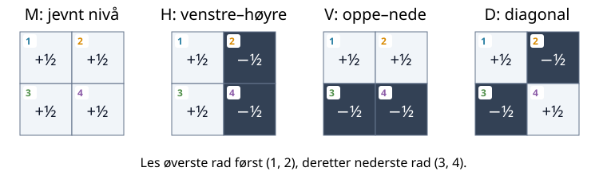

Uke 4 – Ortogonalitet, QR og minste kvadrater
Ukens spørsmål
Hvordan kan ett tall fortelle hvor mye av en vektor som peker i en valgt retning? Dette spørsmålet leder oss fra indreprodukt og ortogonalitet til projeksjoner, Gram–Schmidt, QR-faktorisering og minste kvadraters metode.
Vi begynner med piler i planet. Deretter bruker vi nøyaktig den samme ideen som en mønsterdetektor for \(2\times2\)-bilder fra uke 3. Til slutt lager vi ortogonale retninger selv og undersøker hva som skjer når kolonner er avhengige eller nesten avhengige.
Piler, bilder og polynomer – samme struktur
Denne uken møter vi ulike objekter: en pil i planet, et bilde og et polynom. De ser forskjellige ut, men har en felles matematisk struktur: Vi kan legge dem sammen og gange dem med tall. Derfor kan vi behandle dem som vektorer og bruke de samme ideene om byggesteiner, retninger og koordinater.
Vi beholder ofte det uformelle ordet «pil» for å holde fast i denne intuisjonen. En pil representerer selve objektet – noe med størrelse og retning – mens koordinatene forteller hvordan vi bygger det i en valgt basis. For et bilde kan «retning» være et bestemt kontrastmønster; for et polynom kan det være en bestemt polynomform. Å gange med et tall endrer mengden av dette mønsteret eller denne formen. Vi trenger ikke kunne tegne en vanlig pil for å bruke denne tankegangen.
Når vi senere snakker om lengde og vinkel, må vi også velge hvordan de skal måles. Det er indreproduktet som gir oss denne måleregelen.
Begreper
- indreprodukt, norm og enhetsvektor
- ortogonale og ortonormale vektorer
- ortogonal projeksjon og residual
- klassisk og modifisert Gram–Schmidt
- QR-faktorisering og minste kvadrater
Etter denne uken
Du skal kunne bruke et indreprodukt som en retningsmåler, forklare hvorfor \(x^Tq=0\) betyr at \(x\) og \(q\) er ortogonale, og konstruere en ortonormal basis med Gram–Schmidt. Du skal også kunne diagnostisere eksakt og nesten lineær avhengighet, sammenligne klassisk og modifisert Gram–Schmidt og tolke en minste-kvadraters løsning som en ortogonal oppdeling av dataene.
Kort løype
I forelesningen følger vi hovedløypa:
- dra den blå retningsmåleren og oppdag fortegn og null;
- finn regneregelen \(x^Tq\);
- bruk regelen til å oppdage bildemønstre;
- fjern én retning og bygg Gram–Schmidt;
- se algoritmen møte avhengige kolonner;
- sammenlign klassisk og modifisert Gram–Schmidt;
- bruk \(A=QR\) til minste kvadrater.
De merkede fordypningene gir flere forklaringer og eksperimenter for selvstudium.
Slik bruker du siden
JSXGraph-figurene brukes til å dra, se og lage hypoteser. Pyodide-cellene gjentar forsøkene med tall og lar oss teste mange tilfeller. Figurene og Python-cellene deler ikke variabler; derfor står nødvendige tall og matriser på nytt ved hvert forsøk.
Alle vektorer skrives som kolonner på papir. I NumPy lagres den samme vektoren som en endimensjonal array. Dermed svarer x @ q til matriseproduktet \(x^Tq\).
For \(x,q\in\mathbb R^m\) bruker vi
\[x^Tq=\sum_{i=1}^m x_iq_i, \qquad \lVert x\rVert_2=\sqrt{x^Tx}.\]
| På papir | NumPy | Betydning |
|---|---|---|
| \(x^Tq\) | x @ q |
indreprodukt, ett tall |
| \(Ax\) | A @ x |
matrise ganger vektor |
| \(A^T\) | A.T |
transponert matrise |
| \(\lVert x\rVert_2\) | np.linalg.norm(x) |
euklidsk vektornorm |
| \(\lVert A\rVert_F\) | np.linalg.norm(A) |
Frobeniusnorm for en matrise |
| \(\lVert A\rVert_2\) | np.linalg.norm(A, 2) |
spektral matrisenorm |
Når vi skriver et \(2\times2\)-bilde som en vektor, leser vi radene fra venstre mot høyre. Denne rekkefølgen er den samme som X.reshape(-1).
Hvor mye går vi i en valgt retning?
Vi starter med forskyvningen
\[x=\begin{bmatrix}3\\2\end{bmatrix}.\]
Det er lett å lese at vi går \(3\) enheter mot høyre og \(2\) enheter opp. Men hvor mye går vi i en skrå retning?
Før vi velger målepil, trenger vi å vite hva lengden til en pil er. For \(x=(3,2)^T\) gir Pytagoras
\[\text{lengden til }x=\sqrt{3^2+2^2}=\sqrt{13}.\]
Denne lengden kalles den euklidske normen og skrives \(\lVert x\rVert_2\). For en pil \(v=(v_1,v_2)^T\) betyr notasjonen altså
\[\lVert v\rVert_2=\sqrt{v_1^2+v_2^2}.\]
Normen er ett ikke-negativt tall. Dette er samme lengdebegrep som i uke 3.
Prøv nå pilene \((1,0)^T\) og \((0,1)^T\): Begge har lengde \(1\). En slik pil kalles en enhetsvektor. Vi velger en enhetsvektor \(q\) som målepil, slik at størrelsen på målepilen er den samme når vi skifter retning. Når vi framhever denne rollen, bruker vi også ordet enhetsretning.
Alle piler med lengde \(1\) som starter i origo, ender på en sirkel med radius \(1\): enhetssirkelen. Dra punktet \(q\) rundt sirkelen i figuren. Den tynne blå hjelpelinjen viser retningen til \(q\). Følg den stiplede linjen fra enden av \(x\) vinkelrett bort til hjelpelinjen. Treffpunktet er merket \(P\).
Hvor langt ligger \(P\) fra origo, målt langs \(q\)? Vi kaller dette tallet komponenten av \(x\) langs \(q\), og skriver det som \(c\). Tallet har fortegn: positivt i samme retning som \(q\), negativt i motsatt retning. Mot høyre får vi \(c=3\); oppover får vi \(c=2\). Her er komponenten ett tall; senere bruker vi tallet til å bygge en pil.
Den oransje buen viser vinkelen \(\theta\) fra positiv vannrett akse til \(q\), målt mot klokken fra \(0^\circ\) til \(360^\circ\). Denne vinkelen bruker vi snart til å finne regneregelen.
Prøv dette før du leser videre:
- Sett \(q\) mot høyre. Hvorfor blir komponenten \(3\)?
- Sett \(q\) oppover. Hvorfor blir den \(2\)?
- Finn retningen som gir størst positiv komponent.
- Finn en retning som gir komponent \(0\) uten at \(x\) er null.
- Snu \(q\) motsatt vei. Hva skjer med fortegnet?
Finn regneregelen
Skriv enhetsretningen som vektoren
\[q=\begin{bmatrix}q_1\\q_2\end{bmatrix},\qquad q_1^2+q_2^2=1.\]
Likningen til høyre er lengdekravet fra starten av fanen: \(\lVert q\rVert_2=\sqrt{q_1^2+q_2^2}=1\).
Hvor mye bidrar et vannrett og et loddrett skritt?
La \(\theta\) være vinkelen fra den positive vannrette aksen til den blå målepilen. På enhetssirkelen har pilen koordinatene
\[q=\begin{bmatrix}\cos\theta\\\sin\theta\end{bmatrix}.\]
Dette er den vanlige trekantregelen: cosinus gir vannrett komponent og sinus gir loddrett komponent når hypotenusen har lengde én.
Se først på en skrå retning mellom høyre og opp. Vi deler turen i to etapper og spør om hver av dem: Hvor mye av denne bevegelsen går i retningen \(q\)?
Første etappe: tre enheter mot høyre. Tegn først bare ett vannrett skritt fra origo. Fra endepunktet trekker vi en linje vinkelrett mot retningen \(q\), på samme måte som den stiplede linjen i figuren. Vi får en rettvinklet trekant: Skrittet er hypotenusen med lengde \(1\), og siden langs \(q\) ligger inntil vinkelen \(\theta\). Derfor er
\[\cos\theta =\frac{\text{delen langs }q}{1}, \qquad \text{delen langs }q=\cos\theta.\]
Tre slike skritt gir tre ganger dette bidraget: \(3\cos\theta\).
Andre etappe: to enheter opp. Et loddrett skritt danner vinkelen \(90^\circ-\theta\) med \(q\). Den samme trekantberegningen gir \(\cos(90^\circ-\theta)=\sin\theta\) i retningen \(q\) per skritt. To skritt gir derfor \(2\sin\theta\).
Hele turen. Den andre etappen begynner der den første slutter. I hver etappe kan vi skille mellom bevegelse langs \(q\) og bevegelse på tvers av \(q\). Delene på tvers gir ingen framgang i retningen \(q\). Dermed er den samlede komponenten summen av bidragene langs \(q\):
\[c= \underbrace{3\cos\theta}_{\text{fra turen mot høyre}} +\underbrace{2\sin\theta}_{\text{fra turen opp}}.\]
Prøv \(\theta=0^\circ\), \(90^\circ\) og \(45^\circ\) i figuren. Vi får henholdsvis \(3\), \(2\) og \(5/\sqrt2\approx3.54\). Når målepilen dreies videre, gir fortegnene til cosinus og sinus automatisk negative bidrag der bevegelsen går mot måleretningen.
Siden \(q_1=\cos\theta\) og \(q_2=\sin\theta\), er dette nettopp \(3q_1+2q_2\). Den generelle regelen nedenfor er den samme oppskriften for \(x_1\) vannrette og \(x_2\) loddrette skritt.
Prøv de to etappene hver for seg. Koden skriver dem ut før summen. Endre retningen og forutsi fortegnene først.
For en tur med \(x_1\) vannrette og \(x_2\) loddrette skritt får vi derfor:
\[\boxed{x^Tq=x_1q_1+x_2q_2.}\]
For \(x=(3,2)^T\) blir komponenten \(3q_1+2q_2\). Uttrykket \(x^Tq\) kalles indreproduktet mellom \(x\) og \(q\). Symbolet \(T\) betyr transponering: Den stående kolonnevektoren \(x\) vendes til en rad, slik at matriseproduktet \(x^Tq\) blir ett tall.
Når \(q\) er en enhetsvektor, er \(x^Tq\) et tall som forteller hvor mye av \(x\) som peker i den valgte retningen \(q\).
Legg til en retning som står vinkelrett på \(x\), og kontroller at komponenten er null. Endre bare én retning om gangen. I delen om ortogonalitet gir vi «vinkelrett» et matematisk navn og en test.
Lag en målepil fra en vilkårlig retning
Hvordan lager vi en enhetsvektor som peker samme vei som \(v=(3,4)^T\)? Lengden er \(\sqrt{3^2+4^2}=5\). Vi deler derfor begge koordinatene på \(5\):
\[q=\begin{bmatrix}3/5\\4/5\end{bmatrix},\qquad \lVert q\rVert_2=\sqrt{\frac9{25}+\frac{16}{25}}=1.\]
Pilen er blitt kortere, men peker samme vei. Å dele en ikke-null vektor på lengden kalles å normalisere. Generelt skriver vi
\[q=\frac{v}{\lVert v\rVert_2},\qquad v\ne0.\]
Nå som vi kjenner indreproduktet, kan vi også skrive lengden på en annen måte: \(v^Tv=v_1^2+v_2^2\), så \(\lVert v\rVert_2=\sqrt{v^Tv}\). Dette er den samme Pytagoras-regelen i kortere notasjon.
Et første sammenbrudd
Hva skjer hvis vi prøver å finne retningen til nullvektoren?
Nullvektoren har ingen retning. Regningen forsøker å dele \(0\) på \(0\), og i flyttallsregningen blir resultatet NaN («not a number»). Det er maskinens markering av at regningen ikke ga et gyldig tall. En algoritme må kontrollere lengden før den normaliserer.
Hva om vi bruker målepilen uten å normalisere?
Til nå har \(q\) hatt lengde én. Det er derfor tallet \(x^Tq\) har kunnet tolkes direkte som komponenten av \(x\) langs \(q\). Men selve regningen «gang sammen tilsvarende koordinater og legg sammen» kan vi også utføre med en lengre eller kortere pil.
Prøv først med \(x=(3,2)^T\), \(q=(1,0)^T\) og \(v=2q=(2,0)^T\):
\[x^Tq=3\cdot1+2\cdot0=3,\] \[x^Tv=3\cdot2+2\cdot0=6=2(x^Tq).\]
Begge målepiler peker mot høyre. Komponenten av \(x\) mot høyre er fortsatt \(3\), men dobling av målepilen dobler resultatet av regningen. Prøv også \(v=q/2\): Resultatet blir \(3/2\). Vi må altså skille mellom regneregelen og tolkningen som en komponent.
For to vilkårlige vektorer i planet bruker vi den samme regneregelen:
\[\boxed{x^Tv=x_1v_1+x_2v_2.}\]
Dette kalles fortsatt indreproduktet, også når ingen av vektorene har lengde én. Hva må vi gjøre for å få komponenten langs \(v\) tilbake?
Bruk nå normaliseringen vi nettopp fant: \(q=v/\lVert v\rVert_2\). Da har \(q\) lengde én og peker samme vei som \(v\).
Lengden \(\lVert v\rVert_2\) er ett positivt tall. For å bygge \(v\) tilbake ganger vi hver koordinat i \(q\) med dette tallet:
\[v_1=\lVert v\rVert_2\cdot q_1,\qquad v_2=\lVert v\rVert_2\cdot q_2.\]
Sett dette inn i indreproduktet:
\[\begin{aligned} x^Tv &=x_1v_1+x_2v_2\\ &=x_1\bigl(\lVert v\rVert_2\cdot q_1\bigr) +x_2\bigl(\lVert v\rVert_2\cdot q_2\bigr)\\ &=\lVert v\rVert_2\cdot(x_1q_1+x_2q_2)\\ &=\lVert v\rVert_2\cdot(x^Tq). \end{aligned}\]
I tredje linje trekker vi det samme tallet \(\lVert v\rVert_2\) utenfor begge leddene.
Dermed er
\[\underbrace{x^Tv}_{\text{indreprodukt}} =\underbrace{\lVert v\rVert_2}_{\text{målepilens lengde}} \;\underbrace{x^Tq}_{\text{komponenten langs }v}.\]
For å finne komponenten deler vi derfor \(x^Tv\) på \(\lVert v\rVert_2\). Når lengden allerede er én, er dette akkurat regelen fra figuren.
Ta med til neste fane: En positiv lengdefaktor kan endre størrelsen på resultatet, men kan ikke gjøre et nullresultat forskjellig fra null. For \(v\ne0\) har vi derfor
\[x^Tv=0\quad\Longleftrightarrow\quad x^T\frac{v}{\lVert v\rVert_2}=0.\]
Vi kan altså teste om en pil står på tvers av en annen uten først å gjøre målepilen til en enhetsvektor. Nullvektoren gir også indreprodukt null, men har ingen retning.
I 4.1 fant vi hvor mye av en pil som går i en valgt retning. Nå følger vi ett spørsmål videre: Kan vi skille ut én del av et objekt uten å blande inn de andre delene? Først ser vi hva null komponent betyr. Deretter prøver vi samme idé på bilder, og til slutt bygger vi opp den delen vi har målt og undersøker hva som blir igjen.
Null komponent betyr ortogonalitet
Trykk «vinkelrett» i retningsmåleren. Pilen \(x=(3,2)^T\) er fortsatt like lang, men komponenten er null. Drei målepilen litt til hver side: fortegnet skifter. Hele bevegelsen går på tvers av måleretningen akkurat ved null.
Prøv nå på papir med \(v=(-2,3)^T\):
\[x^Tv=3(-2)+2(3)=-6+6=0.\]
Bidragene opphever hverandre. Del \(v\) på \(\sqrt{13}\) for å få lengde én; indreproduktet forblir null, slik skaleringen i forrige fane forklarte. Vi gir nå denne observerte egenskapen et navn.
To vektorer \(x\) og \(q\) er ortogonale når
\[\boxed{x^Tq=0.}\]
Det betyr ikke at en av vektorene er null. Det betyr at retningsmåleren \(q\) ikke finner noen del av \(x\) i sin retning. For
\[x=\begin{bmatrix}3\\2\end{bmatrix}\]
er for eksempel
\[v=\begin{bmatrix}-2\\3\end{bmatrix}\]
ortogonal på \(x\), fordi \(x^Tv=3(-2)+2(3)=0\).
Prøv to målepiler: \((1,0)^T\) og \((0,1)^T\). Begge har lengde én. Hver leser seg selv som \(1\), men den andre som \(0\). Dermed måler de vannrett og loddrett bevegelse hver for seg. Vi kaller en slik samling ortonormal: pilene har lengde én og er parvis ortogonale.
Vi trenger snart flere måleretninger samtidig. Da vil vi kontrollere både at hver pil har lengde én, og at ulike piler ikke måler hverandres bidrag. En tabell lar oss holde orden på alle disse kontrollene.
Fra enkeltpiler til en tabell med alle testene
La oss først pakke de to pilene vi nettopp prøvde, inn i en matrise. Vi setter dem ved siden av hverandre som kolonner, uten å endre dem.
Fargene følger rollen i produktet: blått er kolonner fra \(Q\), og oransje er rader fra \(Q^T\). Det er de samme tallene før og etter transponering; fargen viser hvilken faktor vi henter dem fra.
\[\textcolor{#1565c0}{q_1=\begin{bmatrix}1\\0\end{bmatrix}},\qquad \textcolor{#1565c0}{q_2=\begin{bmatrix}0\\1\end{bmatrix}}.\]
\[\textcolor{#1565c0}{Q}=\textcolor{#1565c0}{\begin{bmatrix}|&|\\q_1&q_2\\|&|\end{bmatrix}}=\textcolor{#1565c0}{\begin{bmatrix}1&0\\0&1\end{bmatrix}}.\]
Når vi transponerer, blir de samme kolonnene til rader:
\[\textcolor{#b45309}{Q^T}=\textcolor{#b45309}{\begin{bmatrix}\text{— }q_1^T\text{ —}\\\text{— }q_2^T\text{ —}\end{bmatrix}}=\textcolor{#b45309}{\begin{bmatrix}1&0\\0&1\end{bmatrix}}.\]
Nå setter vi begge stablene inn i selve produktet:
\[\begin{aligned} \textcolor{#b45309}{Q^T}\textcolor{#1565c0}{Q} &=\underbrace{\textcolor{#b45309}{\begin{bmatrix}\text{— }q_1^T\text{ —}\\\text{— }q_2^T\text{ —}\end{bmatrix}}}_{\text{rader fra }Q^T} \underbrace{\textcolor{#1565c0}{\begin{bmatrix}|&|\\q_1&q_2\\|&|\end{bmatrix}}}_{\text{kolonner fra }Q}\\[6pt] &=\begin{bmatrix} \textcolor{#b45309}{q_1^T}\textcolor{#1565c0}{q_1}&\textcolor{#b45309}{q_1^T}\textcolor{#1565c0}{q_2}\\ \textcolor{#b45309}{q_2^T}\textcolor{#1565c0}{q_1}&\textcolor{#b45309}{q_2^T}\textcolor{#1565c0}{q_2} \end{bmatrix}. \end{aligned}\]
Hver oppføring kommer fra én oransje rad og én blå kolonne. For eksempel bruker oppføringen øverst til høyre rad 1 fra \(Q^T\) og kolonne 2 fra \(Q\):
\[\textcolor{#b45309}{q_1^T}\textcolor{#1565c0}{q_2} =\textcolor{#b45309}{\begin{bmatrix}1&0\end{bmatrix}} \textcolor{#1565c0}{\begin{bmatrix}0\\1\end{bmatrix}} =\textcolor{#b45309}{1}\cdot\textcolor{#1565c0}{0}+\textcolor{#b45309}{0}\cdot\textcolor{#1565c0}{1}=0.\]
Vi gjør det samme i alle fire oppføringene. Fargen følger hvert tall helt fram til multiplikasjonen:
\[\begin{aligned} \textcolor{#b45309}{Q^T}\textcolor{#1565c0}{Q} &=\begin{bmatrix} \textcolor{#b45309}{1}\cdot\textcolor{#1565c0}{1}+\textcolor{#b45309}{0}\cdot\textcolor{#1565c0}{0}&\textcolor{#b45309}{1}\cdot\textcolor{#1565c0}{0}+\textcolor{#b45309}{0}\cdot\textcolor{#1565c0}{1}\\ \textcolor{#b45309}{0}\cdot\textcolor{#1565c0}{1}+\textcolor{#b45309}{1}\cdot\textcolor{#1565c0}{0}&\textcolor{#b45309}{0}\cdot\textcolor{#1565c0}{0}+\textcolor{#b45309}{1}\cdot\textcolor{#1565c0}{1} \end{bmatrix}\\[4pt] &=\begin{bmatrix}1&0\\0&1\end{bmatrix}. \end{aligned}\]
Resultatene skrives uten farge fordi hvert resultat kommer fra begge faktorene. På diagonalen måler hver pil seg selv: \(\textcolor{#b45309}{q_i^T}\textcolor{#1565c0}{q_i}=\lVert q_i\rVert_2^2=1\). Utenfor diagonalen måler vi to forskjellige piler: De står vinkelrett på hverandre, så resultatet er \(0\).
Samme pakking med flere piler
Hvis vi har \(k\) ortonormale piler i \(\mathbb R^m\), setter vi igjen pilene som kolonner og de transponerte pilene som rader. Blått viser kolonnene fra \(Q\); oransje viser radene fra \(Q^T\):
\[\textcolor{#1565c0}{Q}=\textcolor{#1565c0}{\begin{bmatrix}|&|&&|\\q_1&q_2&\cdots&q_k\\|&|&&|\end{bmatrix}} \quad(m\times k),\]
\[\textcolor{#b45309}{Q^T}=\textcolor{#b45309}{\begin{bmatrix} \text{— }q_1^T\text{ —}\\ \text{— }q_2^T\text{ —}\\ \vdots\\ \text{— }q_k^T\text{ —} \end{bmatrix}} \quad(k\times m).\]
De vannrette strekene framhever at hvert \(q_i^T\) er en hel rad. De loddrette strekene framhever at hvert \(q_j\) er en hel kolonne.
Nå følger vi hele produktet i én kjede. Rad \(i\) fra venstre faktor møter kolonne \(j\) fra høyre faktor:
\[\begin{aligned} \textcolor{#b45309}{Q^T}\textcolor{#1565c0}{Q} &=\underbrace{\textcolor{#b45309}{\begin{bmatrix} \text{— }q_1^T\text{ —}\\ \text{— }q_2^T\text{ —}\\ \vdots\\ \text{— }q_k^T\text{ —} \end{bmatrix}}}_{\text{rader fra }Q^T} \underbrace{\textcolor{#1565c0}{\begin{bmatrix}|&|&&|\\q_1&q_2&\cdots&q_k\\|&|&&|\end{bmatrix}}}_{\text{kolonner fra }Q}\\[8pt] &=\begin{bmatrix} \textcolor{#b45309}{q_1^T}\textcolor{#1565c0}{q_1}&\textcolor{#b45309}{q_1^T}\textcolor{#1565c0}{q_2}&\cdots&\textcolor{#b45309}{q_1^T}\textcolor{#1565c0}{q_k}\\ \textcolor{#b45309}{q_2^T}\textcolor{#1565c0}{q_1}&\textcolor{#b45309}{q_2^T}\textcolor{#1565c0}{q_2}&\cdots&\textcolor{#b45309}{q_2^T}\textcolor{#1565c0}{q_k}\\ \vdots&\vdots&\ddots&\vdots\\ \textcolor{#b45309}{q_k^T}\textcolor{#1565c0}{q_1}&\textcolor{#b45309}{q_k^T}\textcolor{#1565c0}{q_2}&\cdots&\textcolor{#b45309}{q_k^T}\textcolor{#1565c0}{q_k} \end{bmatrix}. \end{aligned}\]
Oppføringen i rad \(i\), kolonne \(j\) er altså \(\textcolor{#b45309}{q_i^T}\textcolor{#1565c0}{q_j}\). Hver oppføring er ett tall, selv om faktorene som gir tallet, er en hel rad og en hel kolonne.
Først bruker vi at ulike piler er ortogonale. Så bruker vi at hver pil har lengde én:
\[\textcolor{#b45309}{Q^T}\textcolor{#1565c0}{Q}= \begin{bmatrix} \lVert q_1\rVert_2^2&0&\cdots&0\\ 0&\lVert q_2\rVert_2^2&\cdots&0\\ \vdots&\vdots&\ddots&\vdots\\ 0&0&\cdots&\lVert q_k\rVert_2^2 \end{bmatrix} = \begin{bmatrix} 1&0&\cdots&0\\ 0&1&\cdots&0\\ \vdots&\vdots&\ddots&\vdots\\ 0&0&\cdots&1 \end{bmatrix}.\]
Matrisen helt til høyre har et navn: identitetsmatrisen \(I_k\). Den har \(k\) rader og \(k\) kolonner, ettall på diagonalen og nuller ellers. Nå kan vi forkorte hele kjeden til
\[\boxed{\textcolor{#b45309}{Q^T}\textcolor{#1565c0}{Q}=I_k.}\]
Dette er de samme enkelttestene pakket sammen: Diagonalen kontrollerer lengdene, og resten kontrollerer ortogonaliteten. Selve \(Q\) trenger ikke være en identitetsmatrise; det er tabellen over indreproduktene som blir \(I_k\) når kolonnene er ortonormale.
Fra retningsmåler til mønsterdetektor
Tenk på et bilde som er lyst til venstre og mørkt til høyre. Vi ønsker ett tall som øker når denne forskjellen blir sterkere, blir null for et jevnt bilde og skifter fortegn når lys og mørke bytter plass. Vi skal prøve om indreproduktet kan gjøre dette. Ordet detektor betyr her bare en regneoppskrift som måler mengden av ett bestemt mønster.
Se mønstrene først
Her er fire små bilder fra uke 3. Hvert bilde har fire piksler. Lyst betyr \(+1/2\), og mørkt betyr \(-1/2\). Dette er fortegnede mønsterverdier: minus betyr et mørkt bidrag i forhold til et referansenivå.

Se på H: Hva skjer med forskjellen mellom venstre og høyre side hvis mønsteret dobles? Hva skjer hvis vi bytter fortegn? Se deretter på M: Kan et jevnt lyst bilde gi noen forskjell mellom venstre og høyre?
Fra fire piksler til én vektor
Vi bruker de samme fire pikselfargene som i uke 3, i samme rekkefølge:
| Plass i bildet | Nummer og farge |
|---|---|
| Øverst til venstre | \(\textcolor{#277da1}{1\text{ — blå}}\) |
| Øverst til høyre | \(\textcolor{#d98900}{2\text{ — oransje}}\) |
| Nederst til venstre | \(\textcolor{#4f8f49}{3\text{ — grønn}}\) |
| Nederst til høyre | \(\textcolor{#8b5aa7}{4\text{ — lilla}}\) |
De fargede numrene i bildene viser hvilken piksel som blir hvilken koordinat. Fargen følger plassen, mens fortegnet og tallet angir pikselverdien. For H leser vi
\[\textcolor{#277da1}{+\tfrac12},\quad \textcolor{#d98900}{-\tfrac12},\quad \textcolor{#4f8f49}{+\tfrac12},\quad \textcolor{#8b5aa7}{-\tfrac12} \quad\longrightarrow\quad \vec h=\begin{bmatrix} \textcolor{#277da1}{1/2}\\\textcolor{#d98900}{-1/2}\\\textcolor{#4f8f49}{1/2}\\\textcolor{#8b5aa7}{-1/2} \end{bmatrix}.\]
Vi har beholdt alle pikselverdiene; vi har bare skrevet dem som én kolonne. Pilen over \(\vec h\) sier at symbolet står for hele vektoren.
Vi bruker denne notasjonen i bildedelen:
| Notasjon | Hva er det? |
|---|---|
| \(x_1,x_2,x_3,x_4\) | fire enkeltverdier, altså tall |
| \(\vec x=(x_1,x_2,x_3,x_4)^T\) | hele bildevektoren |
| \(\vec m,\vec h,\vec v,\vec d\) | fire mønstervektorer, hver med fire tall |
| \(2,-1,1/2\) | koeffisienter som skalerer hele mønstre |
| \(M,H,V,D,X\) i koden | pikselverdiene ordnet som \(2\times2\)-bilder |
For eksempel er \(h_2=-1/2\) ett tall, mens \(\vec h\) inneholder alle fire. Vi bruker \(x_1,\ldots,x_4\) fremfor \(a,b,c,d\) for pikselverdiene, så bokstaven \(d\) ikke får to forskjellige roller.
Les de tre andre bildene i samme rekkefølge. Da får vi
\[\vec m=\frac12\begin{bmatrix}1\\1\\1\\1\end{bmatrix},\qquad \vec h=\frac12\begin{bmatrix}1\\-1\\1\\-1\end{bmatrix},\] \[\vec v=\frac12\begin{bmatrix}1\\1\\-1\\-1\end{bmatrix},\qquad \vec d=\frac12\begin{bmatrix}1\\-1\\-1\\1\end{bmatrix}.\]
Nå kan vi kontrollere lengden. Hver av de fire vektorene har
\[\sqrt{(1/2)^2+(1/2)^2+(1/2)^2+(1/2)^2}=\sqrt1=1.\]
Det er derfor vi valgte størrelsen \(1/2\): Mønstrene kan brukes som enhetsretninger, akkurat som målepilen tidligere.
Hvorfor kan et mønster være en retning?
For en vanlig pil sier «samme retning» at vi kan få den ene ved å gange den andre med et positivt tall. Prøv den samme handlingen på H-bildet: Når vi dobler alle fire pikselverdiene, beholder vi kontrastmønsteret, men gjør kontrasten dobbelt så sterk. Vi har beveget oss lenger i samme mønsterretning. Et negativt tall bytter om lyst og mørkt.
Alle bildevektorer av formen \(\vec y=t\vec h\), der \(t\) er et tall, ligger derfor langs én retning i rommet av bildevektorer. Dette er ikke en retning vi beveger oss i på skjermen. Det er en bestemt måte å endre alle fire pikselverdiene sammen på.
I planet har pilen to koordinater. Her har bildevektoren fire koordinater, én per pikselplass. Vi kan fortsatt gange med tall og legge sammen koordinat for koordinat. Det er disse handlingene som gjør det mulig å bruke samme vektoridé på begge objektene. Vi trenger ikke tegne fire romlige akser for å undersøke regningen.
Et kontrollforsøk: finner vi venstre–høyre-kontrasten?
Gitt: Vi kjenner enhetsmønsteret \(\vec h\) og tre enkle bilder. Målet: Undersøke om indreproduktet gir null for et jevnt bilde, positivt resultat for H-kontrast og negativt resultat når kontrasten snus. Dette er et gjennomregnet eksempel.

Vi begynner med de tre kontrollbildene til venstre; blandingen til høyre kommer i neste trinn.
Et jevnt bilde har bildevektor \(\vec y=(1,1,1,1)^T\). Bruk H-mønsteret: Gang sammen verdiene på samme pikselplass og legg sammen.
\[\vec h^{\,T}\vec y =\tfrac12\cdot1-\tfrac12\cdot1+\tfrac12\cdot1-\tfrac12\cdot1=0.\]
Venstre og høyre side opphever hverandre. Prøv så et bilde som inneholder tre ganger H-mønsteret:
\[\vec y=3\vec h =\begin{bmatrix}3/2\\-3/2\\3/2\\-3/2\end{bmatrix},\] \[\vec h^{\,T}\vec y =\tfrac34+\tfrac34+\tfrac34+\tfrac34=3.\]
Med \(\vec y=-3\vec h\) blir resultatet \(-3\). Ett tall måler altså mengden av dette mønsteret, med fortegn. Det er dette vi mener med en detektor.
Vi har brukt samme oppskrift som for to koordinater, bare med fire ledd:
\[\vec h^{\,T}\vec y=h_1y_1+h_2y_2+h_3y_3+h_4y_4.\]
Hver faktor \(h_i\) eller \(y_i\) er et tall; hele uttrykket gir også ett tall. Generelt bruker vi for vektorer med \(n\) komponenter
\[\boxed{\vec y^{\,T}\vec z=y_1z_1+\cdots+y_nz_n.}\]
Neste forsøk: finner vi igjen ingrediensene i en blanding?
Kontrollforsøket viste hva H-målingen gjør med rene bilder. Nå vil vi vite om den fortsatt finner riktig mengde når flere mønstre er til stede.
Gitt: De fire mønstervektorene og oppskriften nedenfor. Målet: Finne igjen koeffisientene fra pikselverdiene alene. Vi kjenner oppskriften på forhånd slik at vi kan kontrollere svaret.
Bildet til høyre i figuren er denne blandingen:
\[\vec x= \underbrace{2}_{\text{tall}}\underbrace{\vec m}_{\text{vektor}} -\underbrace{1}_{\text{tall}}\underbrace{\vec h}_{\text{vektor}} +\underbrace{\tfrac12}_{\text{tall}}\underbrace{\vec v}_{\text{vektor}}.\]
Regn piksel for piksel:
\[\vec x= \begin{bmatrix}1\\1\\1\\1\end{bmatrix} +\begin{bmatrix}-1/2\\1/2\\-1/2\\1/2\end{bmatrix} +\begin{bmatrix}1/4\\1/4\\-1/4\\-1/4\end{bmatrix} =\begin{bmatrix}3/4\\7/4\\1/4\\5/4\end{bmatrix}.\]
H-målingen blir
\[\vec h^{\,T}\vec x =\tfrac12(\tfrac34-\tfrac74+\tfrac14-\tfrac54)=-1.\]
Vi regner de tre andre målingene på samme måte:
\(\vec m^{\,T}\vec x =\tfrac12(\tfrac34+\tfrac74+\tfrac14+\tfrac54) =\tfrac12\cdot4=2,\)
\(\vec v^{\,T}\vec x =\tfrac12(\tfrac34+\tfrac74-\tfrac14-\tfrac54) =\tfrac12\cdot1=\tfrac12,\)
\(\vec d^{\,T}\vec x =\tfrac12(\tfrac34-\tfrac74-\tfrac14+\tfrac54)=0.\)
Vi fikk tilbake \(2,-1,1/2,0\): akkurat mengdene i oppskriften. Det siste nullresultatet sier at blandingen ikke inneholder noe D-bidrag i denne mønsterbasisen.
Hvorfor påvirkes ikke H-målingen av de andre ingrediensene?
Se først på to konkrete kontroller:
\(\vec h^{\,T}\vec m=\tfrac14(1-1+1-1)=0,\qquad \vec h^{\,T}\vec v=\tfrac14(1-1-1+1)=0.\)
H-målingen gir null på både jevnt nivå og oppe–nede-kontrast. På sitt eget mønster gir den \(\vec h^{\,T}\vec h=\tfrac14(1+1+1+1)=1\). Når vi setter hele oppskriften inn, ser vi derfor hvorfor svaret blir \(-1\):
\(\vec h^{\,T}\vec x =2(\vec h^{\,T}\vec m)-(\vec h^{\,T}\vec h) +\tfrac12(\vec h^{\,T}\vec v) =2\cdot0-1+\tfrac12\cdot0=-1.\)
De andre mønsterparene gir også null. Mønstervektorene er altså ortonormale, akkurat som målepilene tidligere: lengde én hver for seg, og indreprodukt null mellom ulike mønstre. Det er derfor målingene gir byggekoeffisientene direkte. Med vilkårlige mønstre ville dette ikke vært garantert.
Hvorfor samler vi mønstervektorene i en matrise?
Vi har nå gjort fire separate beregninger på det samme bildet. For hvert nytt bilde ønsker vi å gjenta nettopp disse fire beregningene, i fast rekkefølge: M, H, V, D. Matrisen er en kort måte å skrive hele denne oppskriften på.
Vi setter derfor de fire kjente mønstervektorene ved siden av hverandre som kolonner i én matrise:
\[Q_{\text{pattern}}= \begin{bmatrix}|&|&|&|\\ \vec m&\vec h&\vec v&\vec d\\ |&|&|&| \end{bmatrix}.\]
Da skriver matriseproduktet de fire målingene i én kolonne:
\[Q_{\text{pattern}}^T\vec x =\begin{bmatrix} \vec m^{\,T}\vec x\\ \vec h^{\,T}\vec x\\ \vec v^{\,T}\vec x\\ \vec d^{\,T}\vec x \end{bmatrix} =\begin{bmatrix}2\\-1\\1/2\\0\end{bmatrix}.\]
Her betyr måling ett indreprodukt mellom et enhetsmønster og bildevektoren. Hvert tall forteller hvor mye av det mønsteret bildet inneholder i denne ortonormale basisen:
| Måling | Verdi | Hva betyr den i blandingen? |
|---|---|---|
| \(\vec m^{\,T}\vec x\) | \(2\) | To ganger M-mønsteret: et jevnt bidrag på \(1\) i hver piksel. |
| \(\vec h^{\,T}\vec x\) | \(-1\) | H-mønsteret med motsatt fortegn: høyre side blir lysere enn venstre. |
| \(\vec v^{\,T}\vec x\) | \(1/2\) | Halv styrke av V-mønsteret: øvre rad blir lysere enn nedre. |
| \(\vec d^{\,T}\vec x\) | \(0\) | Ingen del av D-mønsteret i denne blandingen. |
Tallene er mønstermengder, ikke de fire pikselverdiene. For eksempel er M-mengden \(2\), mens gjennomsnittet av pikselverdiene er \(1\), fordi hver piksel i enhetsmønsteret M har verdien \(1/2\).
I Python skriver vi ikke pil over variabelnavn: h svarer til \(\vec h\). H lagrer de samme fire verdiene i bildeform, og H.reshape(-1) leser radene i den avtalte rekkefølgen. Omvendt legger x.reshape(2, 2) verdiene tilbake på de fire pikselplassene. Dette endrer bare formen på lagringen.
Koden nedenfor gjentar hele eksemplet og viser bildet sammen med de fire målte mengdene. Som neste eksperiment kan du endre bare koeffisienten foran H: Forklaringen over forutsier at bare H-søylen skal flytte seg.
Hver måling reagerer på sitt eget mønster og gir null på de andre. Hver kolonne i \(Q_{\text{pattern}}\) har lengde én og er ortogonal på de andre. Derfor er \(Q_{\text{pattern}}^TQ_{\text{pattern}}=I\), og målingene gir koordinatene direkte.
Legg 0.05*np.random.default_rng(4).standard_normal((2, 2)) til bildet og gjenta deteksjonen. Målingene blir ikke identiske med de opprinnelige koeffisientene, men de forteller fortsatt hvilke mønstre som dominerer.
Fra komponent til vektor og rest
Vi har brukt indreproduktet til å beregne mengden av et mønster. Nå undersøker vi hvordan en beregnet komponent gir en vektor i den valgte retningen, og hva som blir igjen når denne vektoren trekkes fra. Vi begynner med et konkret eksempel i planet. Symbolene \(x,q,p,r\) betegner vektorer, mens \(c\) betegner ett tall.
La \(x=(3,2)^T\) og \(q=(1,0)^T\). Siden \(q\) har lengde én, er komponenten av \(x\) i retningen \(q\) gitt ved indreproduktet
\[c=q^Tx=1\cdot3+0\cdot2=3.\]
Tallet \(c=3\) angir hvor mye av \(x\) som går i retningen \(q\). For å uttrykke dette som en vektor ganger vi enhetsvektoren \(q\) med tallet \(c\):
\[p=cq=3\begin{bmatrix}1\\0\end{bmatrix} =\begin{bmatrix}3\\0\end{bmatrix}.\]
Vi beregner deretter differansen mellom den opprinnelige vektoren \(x\) og vektoren \(p\):
\[r=x-p=\begin{bmatrix}3\\2\end{bmatrix} -\begin{bmatrix}3\\0\end{bmatrix} =\begin{bmatrix}0\\2\end{bmatrix}.\]
Dermed er \(x=p+r\). I dette eksemplet er \(p\) den vannrette delen av \(x\), mens resten \(r\) er loddrett og står vinkelrett på \(q\).
Undersøk i figuren: Dra i endepunktene til \(x\) og \(q\). Den grå pilen viser den beregnede vektoren \(p=(q^Tx)q\). Den røde pilen fra enden av \(p\) til enden av \(x\) viser differansen \(r=x-p\). Er \(r\) fortsatt vinkelrett på \(q\) når retningen endres? Sammenlign det du ser med tallet \(q^Tr\) som vises i figuren.
La \(q\) være en enhetsvektor. Vi kan dele en vektor \(x\) i to deler:
\(c=q^Tx,\qquad p=cq,\qquad r=x-p.\)
- \(c\) måler hvor mye av \(x\) som går i retning \(q\).
- \(p=(q^Tx)q\) bygger opp denne delen som en vektor.
- \(r=x-p\) er det som er igjen.
Hvorfor er komponenten langs \(q\) lik null?
Sett \(c=q^Tx\) og \(r=x-cq\). Siden \(c\) er ett tall, kan det trekkes utenfor produktet: \(q^T(cq)=c(q^Tq)\). Transponeringen blir stående på \(q\). Dermed får vi
\[\begin{aligned} q^Tr&=q^T(x-cq)\\ &=q^Tx-c(q^Tq)\\ &=c-c\cdot1=0, \end{aligned}\]
fordi \(q\) har lengde én, slik at \(q^Tq=1\). Resten er altså ortogonal på \(q\). Vektoren \(p=(q^Tx)q\) kalles den ortogonale projeksjonen av \(x\) på retningen \(q\), og \(r=x-p\) kalles residualen.
Projeksjon på to ortonormale retninger
Vi vil finne den delen av en vektor som kan uttrykkes ved hjelp av to gitte retninger. I dette eksemplet er
\[x=\begin{bmatrix}3\\2\\4\end{bmatrix},\qquad q_1=\begin{bmatrix}1\\0\\0\end{bmatrix},\qquad q_2=\begin{bmatrix}0\\1\\0\end{bmatrix}.\]
Begge retningsvektorene har lengde én, og \(q_1^Tq_2=1\cdot0+0\cdot1+0\cdot0=0\). De er derfor ortonormale. Alle lineærkombinasjoner av dem har tredje koordinat null. Vektoren \(x\) har tredje koordinat \(4\), så hele \(x\) kan ikke uttrykkes som en slik kombinasjon.
Beregn komponentene. Indreproduktet med hver enhetsvektor gir ett tall:
\[c_1=q_1^Tx=1\cdot3+0\cdot2+0\cdot4=3,\] \[c_2=q_2^Tx=0\cdot3+1\cdot2+0\cdot4=2.\]
Beregn vektorbidragene. Hvert tall multipliseres med den tilhørende enhetsvektoren:
\[c_1q_1=3\begin{bmatrix}1\\0\\0\end{bmatrix} =\begin{bmatrix}3\\0\\0\end{bmatrix},\qquad c_2q_2=2\begin{bmatrix}0\\1\\0\end{bmatrix} =\begin{bmatrix}0\\2\\0\end{bmatrix}.\]
Summen er vektoren \(p\). Differansen \(x-p\) er resten \(r\):
\[p=c_1q_1+c_2q_2 =\begin{bmatrix}3\\0\\0\end{bmatrix} +\begin{bmatrix}0\\2\\0\end{bmatrix} =\begin{bmatrix}3\\2\\0\end{bmatrix},\]
\[r=x-p =\begin{bmatrix}3\\2\\4\end{bmatrix} -\begin{bmatrix}3\\2\\0\end{bmatrix} =\begin{bmatrix}0\\0\\4\end{bmatrix}.\]
Kontroller resten. Vi beregner begge indreproduktene:
\[q_1^Tr=1\cdot0+0\cdot0+0\cdot4=0,\] \[q_2^Tr=0\cdot0+1\cdot0+0\cdot4=0.\]
Resten er ortogonal på begge retningene. Vektoren \(p\) er dermed den ortogonale projeksjonen av \(x\) på planet som \(q_1\) og \(q_2\) spenner ut.
Samle komponentberegningene i ett matriseprodukt
Vi har utført to indreprodukter på samme vektor. For å skrive begge beregningene samlet setter vi retningsvektorene som kolonner i \(Q\). Vi beholder fargene fra \(Q^TQ\): blått for kolonnene i \(Q\) og oransje for radene i \(Q^T\).
\[\textcolor{#1565c0}{Q}=\textcolor{#1565c0}{\begin{bmatrix}|&|\\q_1&q_2\\|&|\end{bmatrix}} =\textcolor{#1565c0}{\begin{bmatrix}1&0\\0&1\\0&0\end{bmatrix}},\] \[\textcolor{#b45309}{Q^T}=\textcolor{#b45309}{\begin{bmatrix}\text{— }q_1^T\text{ —}\\\text{— }q_2^T\text{ —}\end{bmatrix}} =\textcolor{#b45309}{\begin{bmatrix}1&0&0\\0&1&0\end{bmatrix}}.\]
Samle tallene \(c_1\) og \(c_2\) i en koeffisientvektor \(c\). Vektoren \(c\) har to koordinater; \(x\) har tre. Radene i \(Q^T\) gir akkurat de to indreproduktene vi allerede har beregnet:
\[\begin{aligned} c=\textcolor{#b45309}{Q^T}x &=\textcolor{#b45309}{\begin{bmatrix}\text{— }q_1^T\text{ —}\\\text{— }q_2^T\text{ —}\end{bmatrix}}\begin{bmatrix}3\\2\\4\end{bmatrix}\\ &=\begin{bmatrix}\textcolor{#b45309}{q_1^T}x\\\textcolor{#b45309}{q_2^T}x\end{bmatrix}\\ &=\begin{bmatrix} \textcolor{#b45309}{1}\cdot3+\textcolor{#b45309}{0}\cdot2+\textcolor{#b45309}{0}\cdot4\\ \textcolor{#b45309}{0}\cdot3+\textcolor{#b45309}{1}\cdot2+\textcolor{#b45309}{0}\cdot4 \end{bmatrix}\\ &=\begin{bmatrix}3\\2\end{bmatrix}. \end{aligned}\]
Fra koeffisientvektoren tilbake til en vektor i planet
Nå bruker vi kolonnene i \(Q\). Å multiplisere \(Q\) med \(c\) betyr å multiplisere første kolonne med \(c_1\), andre kolonne med \(c_2\), og legge sammen de to vektorene:
\[\begin{aligned} p=\textcolor{#1565c0}{Q}c &=\textcolor{#1565c0}{\begin{bmatrix}|&|\\q_1&q_2\\|&|\end{bmatrix}}\begin{bmatrix}c_1\\c_2\end{bmatrix}\\ &=c_1\textcolor{#1565c0}{q_1}+c_2\textcolor{#1565c0}{q_2}\\ &=3\textcolor{#1565c0}{\begin{bmatrix}1\\0\\0\end{bmatrix}} +2\textcolor{#1565c0}{\begin{bmatrix}0\\1\\0\end{bmatrix}}\\ &=\begin{bmatrix}3\\0\\0\end{bmatrix} +\begin{bmatrix}0\\2\\0\end{bmatrix} =\begin{bmatrix}3\\2\\0\end{bmatrix}. \end{aligned}\]
Vi får samme \(p\) som før. Produktet \(Q^Tx\) beregner koeffisientene; produktet \(Qc\) beregner vektoren med disse koeffisientene. Siden \(c=Q^Tx\), kan vi sette det første uttrykket inn i det andre:
\[p=\textcolor{#1565c0}{Q}c =\textcolor{#1565c0}{Q}\underbrace{(\textcolor{#b45309}{Q^T}x)}_{c} =(\textcolor{#1565c0}{Q}\textcolor{#b45309}{Q^T})x.\]
Vi utfører altså to operasjoner i rekkefølge. \(Q^T\) går fra tre koordinater til to koeffisienter; \(Q\) går fra to koeffisienter til tre koordinater. Matrisen \(QQ^T\) har størrelse \(3\times3\) i dette eksemplet. Den er ikke \(Q^TQ\), som har størrelse \(2\times2\).
Den samme beregningen med flere ortonormale retninger
La nå \(q_1,\ldots,q_k\) være ortonormale vektorer i \(\mathbb R^m\). Vi beregner først de \(k\) tallene \(c_i=q_i^Tx\) og deretter vektoren \(p=c_1q_1+\cdots+c_kq_k\). Med kolonnene samlet i \(Q\) blir dette
\[c=\textcolor{#b45309}{Q^T}x =\textcolor{#b45309}{\begin{bmatrix}\text{— }q_1^T\text{ —}\\\vdots\\\text{— }q_k^T\text{ —}\end{bmatrix}}x =\begin{bmatrix}q_1^Tx\\\vdots\\q_k^Tx\end{bmatrix},\]
\[p=\textcolor{#1565c0}{Q}c =\textcolor{#1565c0}{\begin{bmatrix}|&&|\\q_1&\cdots&q_k\\|&&|\end{bmatrix}} \begin{bmatrix}c_1\\\vdots\\c_k\end{bmatrix} =c_1\textcolor{#1565c0}{q_1}+\cdots+c_k\textcolor{#1565c0}{q_k}.\]
Hvorfor blir resten \(r=x-p\) ortogonal på alle de valgte retningene? Vi bruker \(\sum_{i=1}^k\) som kort skrivemåte for å legge sammen leddene med \(i=1,2,\ldots,k\). For en bestemt \(q_j\) får vi
\[\begin{aligned} q_j^Tr &=q_j^Tx-\sum_{i=1}^k c_i(q_j^Tq_i)\\ &=c_j-c_j\\ &=0. \end{aligned}\]
I summen er \(q_j^Tq_i=0\) når \(i\ne j\), og \(q_j^Tq_j=1\). Bare leddet \(c_j\) står derfor igjen. Når vi samler alle disse nullresultatene som en kolonne, får vi
\[\textcolor{#b45309}{Q^T}r =\begin{bmatrix}q_1^Tr\\\vdots\\q_k^Tr\end{bmatrix} =\begin{bmatrix}0\\\vdots\\0\end{bmatrix}.\]
Vi kan nå oppsummere beregningen med den korte matrisenotasjonen:
\[\boxed{c=Q^Tx,\qquad p=Q(Q^Tx),\qquad Q^T(x-p)=0.}\]
Hvorfor er ikke projeksjonen alltid lik \(x\)?
Vi har vist at \(Q^TQ=I_k\) når de \(k\) kolonnene i \(Q\) er ortonormale. Det betyr ikke at \(QQ^T\) er identitetsmatrisen: rekkefølgen i produktet er avgjørende.
I eksemplet over har \(Q\) to kolonner i \(\mathbb R^3\):
\[\textcolor{#1565c0}{Q} =\begin{bmatrix}1&0\\0&1\\0&0\end{bmatrix}.\]
De to produktene blir
\[\textcolor{#b45309}{Q^T}\textcolor{#1565c0}{Q} =\begin{bmatrix}1&0\\0&1\end{bmatrix}=I_2, \qquad \textcolor{#1565c0}{Q}\textcolor{#b45309}{Q^T} =\begin{bmatrix}1&0&0\\0&1&0\\0&0&0\end{bmatrix}\ne I_3.\]
Kolonnene i \(Q\) spenner ut \(xy\)-planet. Derfor beholder projeksjonen de to første komponentene, mens den tredje blir igjen i residualen. For \(x=(3,2,4)^T\) får vi
\[p=QQ^Tx=\begin{bmatrix}3\\2\\0\end{bmatrix}, \qquad r=x-p=\begin{bmatrix}0\\0\\4\end{bmatrix}.\]
Vi får \(p=x\) akkurat når \(x\) ligger i rommet kolonnene i \(Q\) spenner ut. Hvis \(Q\) er kvadratisk med ortonormale kolonner, spenner de ut hele rommet. Da gjelder også \(QQ^T=I\), og projeksjonen er lik \(x\) for alle \(x\).
For en vilkårlig ikke-null vektor \(a\) må vi korrigere for lengden:
\[\operatorname{proj}_a(x)=\frac{a^Tx}{a^Ta}a.\]
Når \(a\) er en enhetsvektor, er \(a^Ta=1\).
Nå har vi en måte å fjerne en kjent retning på. I neste fane bruker vi nettopp dette til å lage nye ortogonale retninger: Ta en ny pil, fjern delen langs de gamle pilene, og normaliser det som står igjen. Dette blir Gram–Schmidt.
Hvor får vi ortogonale detektorer fra?
Anta at vi starter med
\[a_1=\begin{bmatrix}2\\1\end{bmatrix},\qquad a_2=\begin{bmatrix}1\\2\end{bmatrix}.\]
De spenner ut hele \(\mathbb R^2\), men \(a_1^Ta_2=4\ne0\). Vi lager nye vektorer som spenner ut det samme rommet:
\[q_1=\frac{a_1}{\lVert a_1\rVert_2},\]
\[r_{12}=q_1^Ta_2,\qquad v_2=a_2-r_{12}q_1,\qquad q_2=\frac{v_2}{\lVert v_2\rVert_2}.\]
Les operasjonene med språket vi allerede har:
- normaliser den første retningen;
- mål hvor mye av \(a_2\) som går i retning \(q_1\);
- bygg opp og trekk fra denne delen;
- normaliser det som er igjen.
Hvorfor blir den nye pilen vinkelrett? Måleren \(q_1\) leste \(r_{12}\) på \(a_2\). Vi trekker fra nøyaktig denne mengden i retning \(q_1\):
\[q_1^Tv_2=q_1^Ta_2-r_{12}(q_1^Tq_1)=r_{12}-r_{12}=0.\]
Normalisering endrer bare lengden, ikke retningen. Derfor er også \(q_1^Tq_2=(q_1^Tv_2)/\lVert v_2\rVert_2=0\), så lenge \(v_2\ne0\). I talleksemplet nedenfor kan du kontrollere det direkte: \((2,1)\begin{bmatrix}-1\\2\end{bmatrix}=-2+2=0\).
Dette er Gram–Schmidt-prosessen.
Hele regningen for hånd
Vi bruker \(a_1=(2,1)^T\) og \(a_2=(1,2)^T\). Blått følger de nye enhetsvektorene, og lilla følger tallene som angir hvor mye av hver enhetsvektor som inngår. De samme fargene brukes når vi senere samler resultatene i \(Q\) og \(R\).
Første normalisering gir
\[\textcolor{#8b5aa7}{r_{11}}=\lVert a_1\rVert_2 =\sqrt{2^2+1^2}=\textcolor{#8b5aa7}{\sqrt5},\qquad \textcolor{#1565c0}{q_1}=\frac{a_1}{\textcolor{#8b5aa7}{r_{11}}}=\textcolor{#1565c0}{\frac1{\sqrt5}\begin{bmatrix}2\\1\end{bmatrix}}.\]
Komponenten av \(a_2\) langs \(q_1\) er
\[\textcolor{#8b5aa7}{r_{12}}=\textcolor{#1565c0}{q_1^T}a_2 =\frac{2\cdot1+1\cdot2}{\sqrt5}=\textcolor{#8b5aa7}{\frac4{\sqrt5}}.\]
Vi trekker den tilhørende vektoren fra \(a_2\):
\[\begin{aligned} v_2&=a_2-\textcolor{#8b5aa7}{r_{12}}\textcolor{#1565c0}{q_1}\\ &=\begin{bmatrix}1\\2\end{bmatrix} -\textcolor{#8b5aa7}{\frac4{\sqrt5}}\,\textcolor{#1565c0}{\frac1{\sqrt5}\begin{bmatrix}2\\1\end{bmatrix}}\\ &=\begin{bmatrix}1\\2\end{bmatrix} -\begin{bmatrix}8/5\\4/5\end{bmatrix} =\begin{bmatrix}-3/5\\6/5\end{bmatrix}. \end{aligned}\]
Andre normalisering gir
\[\textcolor{#8b5aa7}{r_{22}}=\lVert v_2\rVert_2 =\sqrt{\frac9{25}+\frac{36}{25}} =\textcolor{#8b5aa7}{\frac3{\sqrt5}},\qquad \textcolor{#1565c0}{q_2}=\frac{v_2}{\textcolor{#8b5aa7}{r_{22}}}=\textcolor{#1565c0}{\frac1{\sqrt5}\begin{bmatrix}-1\\2\end{bmatrix}}.\]
Skriv regnskapet for hver opprinnelig vektor
Hva har vi beregnet? Normaliseringen \(q_1=a_1/r_{11}\) kan skrives tilbake som \(a_1=r_{11}q_1\). Tilsvarende gir \(v_2=a_2-r_{12}q_1\) og \(v_2=r_{22}q_2\) uttrykket \(a_2=r_{12}q_1+r_{22}q_2\).
Vi har altså to ferdige likninger:
\[a_1=\textcolor{#8b5aa7}{r_{11}}\textcolor{#1565c0}{q_1}+\textcolor{#8b5aa7}{0}\textcolor{#1565c0}{q_2},\] \[a_2=\textcolor{#8b5aa7}{r_{12}}\textcolor{#1565c0}{q_1}+\textcolor{#8b5aa7}{r_{22}}\textcolor{#1565c0}{q_2}.\]
Kontroller begge med tallene fra regningen:
\[a_1=\textcolor{#8b5aa7}{\sqrt5}\,\textcolor{#1565c0}{\frac1{\sqrt5}\begin{bmatrix}2\\1\end{bmatrix}} =\begin{bmatrix}2\\1\end{bmatrix},\]
\[\begin{aligned} a_2&=\textcolor{#8b5aa7}{\frac4{\sqrt5}}\,\textcolor{#1565c0}{\frac1{\sqrt5}\begin{bmatrix}2\\1\end{bmatrix}} +\textcolor{#8b5aa7}{\frac3{\sqrt5}}\,\textcolor{#1565c0}{\frac1{\sqrt5}\begin{bmatrix}-1\\2\end{bmatrix}}\\ &=\begin{bmatrix}8/5\\4/5\end{bmatrix} +\begin{bmatrix}-3/5\\6/5\end{bmatrix} =\begin{bmatrix}1\\2\end{bmatrix}. \end{aligned}\]
Ingen nye vektorer eller koeffisienter skal beregnes for å skrive QR. Vi skal bare samle disse to likningene.
Fra to likninger til to matriser
Begge likningene bruker de samme blå vektorene. Vi setter dem som kolonner i én matrise:
\[\textcolor{#1565c0}{Q}=\textcolor{#1565c0}{\begin{bmatrix}|&|\\q_1&q_2\\|&|\end{bmatrix}}=\textcolor{#1565c0}{\frac1{\sqrt5}\begin{bmatrix}2&-1\\1&2\end{bmatrix}}.\]
For hver opprinnelig vektor skriver vi koeffisientene i rekkefølgen «mengde av \(q_1\), mengde av \(q_2\)»:
| Opprinnelig vektor | Koeffisient foran \(q_1\) | Koeffisient foran \(q_2\) |
|---|---|---|
| \(a_1\) | \(\textcolor{#8b5aa7}{r_{11}=\sqrt5}\) | \(\textcolor{#8b5aa7}{0}\) |
| \(a_2\) | \(\textcolor{#8b5aa7}{r_{12}=4/\sqrt5}\) | \(\textcolor{#8b5aa7}{r_{22}=3/\sqrt5}\) |
Koeffisientene for én opprinnelig vektor blir én kolonne. Dermed får vi matrisen
\[\textcolor{#8b5aa7}{R}= \textcolor{#8b5aa7}{\begin{bmatrix}r_{11}&r_{12}\\0&r_{22}\end{bmatrix}} =\textcolor{#8b5aa7}{\begin{bmatrix}\sqrt5&4/\sqrt5\\0&3/\sqrt5\end{bmatrix}}.\]
Første kolonne i \(R\) hører til \(a_1\), og andre kolonne hører til \(a_2\). Første rad inneholder mengdene av \(q_1\); andre rad inneholder mengdene av \(q_2\). Nulloppføringen sier at \(a_1\) ikke trenger noe bidrag fra \(q_2\).
Klassisk Gram–Schmidt for flere kolonner
Fra to til tre vektorer
I eksemplet over lå vektorene i planet. To uavhengige vektorer fyller allerede hele planet; en tredje kan derfor ikke gi en ny uavhengig retning der. Nå arbeider vi i \(\mathbb R^m\) med \(m\ge3\) og antar at de tre opprinnelige vektorene er lineært uavhengige.
Vi viderefører samme regning og samme farger: blått er de ortonormale vektorene, lilla er koeffisientene. Anta at \(q_1\) og \(q_2\) allerede er beregnet fra \(a_1\) og \(a_2\). Målet er å behandle \(a_3\) og samtidig bevare et fullstendig regnskap for den.
Beregn de to komponentene av \(a_3\):
\[\textcolor{#8b5aa7}{r_{13}}=\textcolor{#1565c0}{q_1^T}a_3,\qquad \textcolor{#8b5aa7}{r_{23}}=\textcolor{#1565c0}{q_2^T}a_3.\]
Begge koeffisientene er tall. Indeksene i \(r_{23}\) betyr «komponenten langs \(q_2\) i den opprinnelige vektoren \(a_3\)».
Beregn og trekk fra vektorbidragene:
\[p_3=\textcolor{#8b5aa7}{r_{13}}\textcolor{#1565c0}{q_1}+\textcolor{#8b5aa7}{r_{23}}\textcolor{#1565c0}{q_2},\] \[v_3=a_3-p_3=a_3-\textcolor{#8b5aa7}{r_{13}}\textcolor{#1565c0}{q_1}-\textcolor{#8b5aa7}{r_{23}}\textcolor{#1565c0}{q_2}.\]
Her er \(p_3\) projeksjonen på de to tidligere retningene, og \(v_3\) er resten. Vi bruker navnet \(v_3\) fordi denne resten snart skal normaliseres.
Kontroller at resten er ortogonal på begge retningene
For den første retningen får vi
\[\begin{aligned} \textcolor{#1565c0}{q_1^T}v_3 &=\textcolor{#1565c0}{q_1^T}a_3 -\textcolor{#8b5aa7}{r_{13}}(\textcolor{#1565c0}{q_1^Tq_1}) -\textcolor{#8b5aa7}{r_{23}}(\textcolor{#1565c0}{q_1^Tq_2})\\ &=\textcolor{#8b5aa7}{r_{13}}-\textcolor{#8b5aa7}{r_{13}}\cdot1-\textcolor{#8b5aa7}{r_{23}}\cdot0=0. \end{aligned}\]
For den andre retningen får vi tilsvarende
\[\begin{aligned} \textcolor{#1565c0}{q_2^T}v_3 &=\textcolor{#1565c0}{q_2^T}a_3 -\textcolor{#8b5aa7}{r_{13}}(\textcolor{#1565c0}{q_2^Tq_1}) -\textcolor{#8b5aa7}{r_{23}}(\textcolor{#1565c0}{q_2^Tq_2})\\ &=\textcolor{#8b5aa7}{r_{23}}-\textcolor{#8b5aa7}{r_{13}}\cdot0-\textcolor{#8b5aa7}{r_{23}}\cdot1=0. \end{aligned}\]
Kryssleddene er null fordi \(q_1\) og \(q_2\) er ortogonale. Å trekke fra bidraget langs den ene retningen påvirker derfor ikke komponenten langs den andre. Dette er en forklaring i eksakt regning; i neste fane undersøker vi hva avrunding kan endre.
Siden \(a_3\) tilfører en uavhengig retning, er \(v_3\ne0\). Normaliser resten:
\[\textcolor{#8b5aa7}{r_{33}}=\lVert v_3\rVert_2,\qquad \textcolor{#1565c0}{q_3}=\frac{v_3}{\textcolor{#8b5aa7}{r_{33}}}.\]
Vi deler med ett positivt tall. Lengden blir én, og de to indreproduktene som var null, forblir null. Dermed er \(q_1,q_2,q_3\) ortonormale.
Samle regnskapet for tre vektorer
Normaliseringen gir \(v_3=r_{33}q_3\). Sett dette inn i \(a_3=p_3+v_3\). Da har vi følgende tre likninger:
\[\begin{aligned} a_1&=\textcolor{#8b5aa7}{r_{11}}\textcolor{#1565c0}{q_1},\\ a_2&=\textcolor{#8b5aa7}{r_{12}}\textcolor{#1565c0}{q_1}+\textcolor{#8b5aa7}{r_{22}}\textcolor{#1565c0}{q_2},\\ a_3&=\textcolor{#8b5aa7}{r_{13}}\textcolor{#1565c0}{q_1}+\textcolor{#8b5aa7}{r_{23}}\textcolor{#1565c0}{q_2}+\textcolor{#8b5aa7}{r_{33}}\textcolor{#1565c0}{q_3}. \end{aligned}\]
Som før blir de blå vektorene kolonnene i \(Q\). Koeffisientene for \(a_1\), \(a_2\) og \(a_3\) blir henholdsvis første, andre og tredje kolonne i \(R\):
\[\textcolor{#1565c0}{Q}=\textcolor{#1565c0}{\begin{bmatrix}|&|&|\\q_1&q_2&q_3\\|&|&|\end{bmatrix}},\qquad \textcolor{#8b5aa7}{R}=\textcolor{#8b5aa7}{\begin{bmatrix}r_{11}&r_{12}&r_{13}\\0&r_{22}&r_{23}\\0&0&r_{33}\end{bmatrix}}.\]
Første kolonne i \(R\) inneholder \((r_{11},0,0)^T\), fordi uttrykket for \(a_1\) bare bruker \(q_1\). Andre kolonne inneholder \((r_{12},r_{22},0)^T\). Tredje kolonne inneholder alle de tre koeffisientene vi nettopp beregnet.
Produktet samler de tre vektorlikningene:
\[\begin{aligned} \textcolor{#1565c0}{Q}\textcolor{#8b5aa7}{R} &=\textcolor{#1565c0}{\begin{bmatrix}|&|&|\\q_1&q_2&q_3\\|&|&|\end{bmatrix}}\textcolor{#8b5aa7}{\begin{bmatrix}r_{11}&r_{12}&r_{13}\\0&r_{22}&r_{23}\\0&0&r_{33}\end{bmatrix}}\\ &=\begin{bmatrix}|&|&|\\ \textcolor{#8b5aa7}{r_{11}}\textcolor{#1565c0}{q_1}& \textcolor{#8b5aa7}{r_{12}}\textcolor{#1565c0}{q_1}+\textcolor{#8b5aa7}{r_{22}}\textcolor{#1565c0}{q_2}& \textcolor{#8b5aa7}{r_{13}}\textcolor{#1565c0}{q_1}+\textcolor{#8b5aa7}{r_{23}}\textcolor{#1565c0}{q_2}+\textcolor{#8b5aa7}{r_{33}}\textcolor{#1565c0}{q_3}\\ |&|&| \end{bmatrix}\\ &=\begin{bmatrix}|&|&|\\a_1&a_2&a_3\\|&|&|\end{bmatrix}=A. \end{aligned}\]
Også med tre kolonner er \(A=QR\) kortformen av regnskapet vi allerede har ført. Nullene under diagonalen i \(R\) beskriver rekkefølgen på beregningene: Tidligere vektorer bruker ikke retninger som beregnes senere.
Den samme beregningen i generell vektorform
La \(a_1,\ldots,a_k\) være lineært uavhengige vektorer i \(\mathbb R^m\), med \(m\ge k\). Anta at \(q_1,\ldots,q_{j-1}\) allerede er beregnet. For neste vektor \(a_j\) gjentar vi nøyaktig de samme operasjonene.
Først beregner vi tallene som angir komponentene langs tidligere retninger:
\[\textcolor{#8b5aa7}{r_{1j}}=\textcolor{#1565c0}{q_1^T}a_j,\quad\ldots,\quad \textcolor{#8b5aa7}{r_{j-1,j}}=\textcolor{#1565c0}{q_{j-1}^T}a_j.\]
Kort skrevet er dette \(\textcolor{#8b5aa7}{r_{ij}}=\textcolor{#1565c0}{q_i^T}a_j\) for \(i<j\). I klassisk Gram–Schmidt beregnes alle disse indreproduktene med den opprinnelige vektoren \(a_j\).
Deretter trekker vi fra de tilhørende vektorbidragene:
\[\begin{aligned} v_j &=a_j-\textcolor{#8b5aa7}{r_{1j}}\textcolor{#1565c0}{q_1}-\cdots -\textcolor{#8b5aa7}{r_{j-1,j}}\textcolor{#1565c0}{q_{j-1}}\\ &=a_j-\sum_{i=1}^{j-1}\textcolor{#8b5aa7}{r_{ij}}\textcolor{#1565c0}{q_i}. \end{aligned}\]
Summetegnet forkorter de samme \(j-1\) leddene som står i første linje. Til slutt beregner vi lengden og normaliserer:
\[\textcolor{#8b5aa7}{r_{jj}}=\lVert v_j\rVert_2,\qquad \textcolor{#1565c0}{q_j}=\frac{v_j}{\textcolor{#8b5aa7}{r_{jj}}}.\]
Ved \(j=1\) finnes ingen tidligere retninger: Da er \(v_1=a_1\). Lineær uavhengighet sikrer at restene er ikke-null i eksakt regning. Vi skal senere undersøke hvordan avhengighet og avrunding påvirker normaliseringen.
Regnskapet for kolonne \(j\) er nå
\[a_j=\sum_{i=1}^{j-1}\textcolor{#8b5aa7}{r_{ij}}\textcolor{#1565c0}{q_i} +\textcolor{#8b5aa7}{r_{jj}}\textcolor{#1565c0}{q_j} =\sum_{i=1}^{j}\textcolor{#8b5aa7}{r_{ij}}\textcolor{#1565c0}{q_i}.\]
Det er denne likningen kolonne \(j\) i \(R\) lagrer.
Dimensjoner og overgangen til kode
Samle de opprinnelige vektorene i \(A=[a_1\ \cdots\ a_k]\). Lineær uavhengighet betyr at \(A\) har full kolonnerang, altså rang \(k\). De \(k\) beregnede enhetsvektorene har fortsatt \(m\) koordinater hver:
\[A\in\mathbb R^{m\times k},\qquad \textcolor{#1565c0}{Q}\in\mathbb R^{m\times k},\qquad \textcolor{#8b5aa7}{R}\in\mathbb R^{k\times k}.\]
Dette kalles en tynn QR-faktorisering: Vi beholder de \(k\) kolonnene som trengs for å uttrykke kolonnene i \(A\). Vi utvider ikke \(Q\) til \(m\) kolonner når \(m>k\).
\[A=\textcolor{#1565c0}{Q}\textcolor{#8b5aa7}{R},\qquad Q^TQ=I_k.\]
Kolonnene i \(Q\) er ortonormale, også når \(Q\) er rektangulær. De spenner ut det samme rommet som kolonnene i \(A\): \(C(Q)=C(A)\). Her betyr \(C(A)\) alle lineærkombinasjoner av kolonnene i \(A\). De positive diagonalverdiene \(r_{jj}\) gjør \(R\) invertibel i eksakt regning, så et system \(Rc=d\) har én entydig løsning.
Koden nedenfor følger vektorformlene: beregn koeffisientene, trekk fra vektorbidragene, beregn lengden og normaliser. I NumPy starter indekser på \(0\). Variabelen n i koden er antallet kolonner, kalt \(k\) på papir.
Koden samler de tidligere vektorene i Q[:, :j]. Derfor beregner Q[:, :j].T @ A[:, j] alle de tidligere indreproduktene samtidig, og Q[:, :j] @ coefficients beregner summen som skal trekkes fra.
Matrisen som brukes i forsøket, er
\[A=\begin{bmatrix}1&1&0\\1&0&1\\0&1&1\\1&1&1\end{bmatrix}.\]
Den har fire rader og tre uavhengige kolonner. Resultatet får derfor \(Q\) av størrelse \(4\times3\) og \(R\) av størrelse \(3\times3\).
De to kontrollene bruker Frobeniusnormen og undersøker forskjellige egenskaper. For en matrise \(B=[b_{ij}]\) er den definert ved
\[\lVert B\rVert_F =\sqrt{\sum_i\sum_j b_{ij}^2}.\]
Frobeniusnormen behandler altså alle matriseoppføringene som én lang vektor og måler størrelsen på denne. Derfor blir begge kontrollene ett ikke-negativt tall som er null når matriseidentiteten stemmer eksakt.
- \(\lVert Q^TQ-I_k\rVert_F\) måler tap av ortonormalitet;
- \(\lVert A-QR\rVert_F\) måler om faktorene bygger opp \(A\) igjen.
Bryt algoritmen: eksakt avhengighet
Før vi ser feilen i en matrise, kan vi framprovosere den geometrisk. I figuren er
\[ q_1=\frac1{\sqrt5}\begin{bmatrix}2\\1\end{bmatrix}, \qquad q_\perp=\frac1{\sqrt5}\begin{bmatrix}-1\\2\end{bmatrix}, \]
og den andre vektoren bygges som
\[a_2=\alpha q_1+\varepsilon q_\perp.\]
Skyv \(\varepsilon\) mot null. Den røde resten etter at \(q_1\)-delen er trukket fra, er \(v_2=\varepsilon q_\perp\).
Ved \(\varepsilon=0\) er \(a_2\) et multiplum av \(q_1\). I eksakt matematikk er resten null, og det finnes ingen ny retning å normalisere. I flyttallsregning kan subtraksjonene etterlate en svært liten rest i stedet for eksakt null. Derfor er NaN et mulig, men ikke garantert, symptom på eksakt avhengighet. Når \(\varepsilon\) er liten, finnes en ny retning matematisk, men hele retningen må hentes fra en liten differanse.
I matrisen
\[A=\begin{bmatrix}1&2&3\\0&1&1\\0&0&0\end{bmatrix}\]
er \(a_3=a_1+a_2\). Den tredje kolonnen inneholder derfor ingen ny retning. I eksakt aritmetikk trekker Gram–Schmidt fra hele kolonnen og får \(v_3=0\). I dette binært eksakte eksemplet skjer det også i flyttallsregning, og koden forsøker så å dele på \(\lVert v_3\rVert_2=0\).
NaN er et symptom, ikke forklaringen
\[\text{lineært avhengig kolonne} \Longrightarrow v_j=0 \Longrightarrow \lVert v_j\rVert_2=0 \Longrightarrow v_j/\lVert v_j\rVert_2\text{ er udefinert}.\]
En robust implementasjon må bruke en skalert toleranse og stoppe når resten er for liten til å gi en pålitelig ny retning. Det er en beslutning om numerisk rang, ikke et bevis på eksakt lineær avhengighet.
Nesten avhengighet: endelige tall kan også være dårlige
Følg GS og avrundingen samtidig
Vi setter \(e=10^{-8}\) fra starten og bruker vanlig float64-regning. De tre vektorene er
\[\textcolor{#1565c0}{a_1=(1,e,0,0)^T},\qquad \textcolor{#238443}{a_2=(1,0,e,0)^T},\qquad \textcolor{#c62828}{a_3=(1,0,0,e)^T}.\]
De er lineært uavhengige, men peker nesten samme vei. Vi følger klassisk Gram–Schmidt og undersøker når de beregnede retningene slutter å være ortogonale. Blått, grønt og rødt følger henholdsvis første, andre og tredje vektor.
En hatt markerer en beregnet verdi, for eksempel \(\widehat q_1\). Uttrykkene nedenfor viser float64-resultatene med enkle brøker; \(\approx\) skjuler bare de siste avrundede sifrene.
Første normalisering: avrundingen skjer allerede her
For å finne lengden til \(a_1\) beregner programmet først summen av kvadrerte koordinater. Her skjer det avgjørende tapet:
\[1+e^2=1+10^{-16} \quad\xrightarrow{\text{float64}}\quad1.\]
Bidraget \(10^{-16}\) er for lite til å endre tallet \(1\) i denne beregningen. Programmet beregner derfor lengden som \(1\) og får
\[\textcolor{#1565c0}{\widehat q_1=(1,10^{-8},0,0)^T}.\]
Dette er mekanismen fra prosjekt 1 – Floating-point attack: Et lite bidrag forsvinner når det legges til et stort. Nå følger vi hvordan tapet påvirker neste GS-operasjon.
Andre vektor: en liten rest normaliseres
Koeffisienten beregnes med den avrundede første vektoren:
\[\widehat r_{12}=\widehat q_1^Ta_2 =1\cdot1+10^{-8}\cdot0+0\cdot10^{-8}+0\cdot0=1.\]
Deretter trekker programmet fra:
\[\widehat v_2 =\begin{bmatrix}1\\0\\10^{-8}\\0\end{bmatrix} -\begin{bmatrix}1\\10^{-8}\\0\\0\end{bmatrix} =\begin{bmatrix}0\\-10^{-8}\\10^{-8}\\0\end{bmatrix}.\]
Første koordinat blir \(1-1=0\). Den lille korreksjonen som gikk tapt i normaliseringen, kan ikke gjenopprettes av subtraksjonen.
Restens lengde er omtrent \(10^{-8}\sqrt2\). Divisjonen med denne lille lengden gjør de små koordinatene til tall av størrelse én:
\[\textcolor{#238443}{\widehat q_2 \approx\frac1{\sqrt2}(0,-1,1,0)^T}.\]
Kontrollen viser allerede en liten feil:
\[\widehat q_1^T\widehat q_2 \approx\frac{1\cdot0+10^{-8}(-1)+0\cdot1+0\cdot0}{\sqrt2} =-\frac{10^{-8}}{\sqrt2}\approx-7.07\cdot10^{-9}.\]
Resultatet skulle vært null. Foreløpig er avviket lite; neste kolonne viser hvorfor det likevel får betydning.
Tredje vektor: klassisk GS overser et bidrag i resten
Klassisk GS beregner begge koeffisientene mot den opprinnelige vektoren \(a_3\):
\[\widehat r_{13}=\widehat q_1^Ta_3=1,\]
\[\widehat r_{23}=\widehat q_2^Ta_3 =0\cdot1+(\widehat q_2)_2\cdot0 +(\widehat q_2)_3\cdot0+0\cdot10^{-8}=0.\]
Siden den andre koeffisienten blir null, trekkes bare bidraget langs \(\widehat q_1\) fra:
\[\widehat v_3 =\begin{bmatrix}1\\0\\0\\10^{-8}\end{bmatrix} -\begin{bmatrix}1\\10^{-8}\\0\\0\end{bmatrix} =\begin{bmatrix}0\\-10^{-8}\\0\\10^{-8}\end{bmatrix}.\]
Men denne resten har en negativ andre koordinat, akkurat som \(\widehat q_2\). Klassisk GS beregner ikke koeffisienten på nytt etter subtraksjonen. Normaliseringen gir derfor
\[\textcolor{#c62828}{\widehat q_3 \approx\frac1{\sqrt2}(0,-1,0,1)^T}.\]
Nå er feilen stor og lett å se:
\[\begin{aligned} \textcolor{#238443}{\widehat q_2}^{\,T} \textcolor{#c62828}{\widehat q_3} &\approx\frac12 \begin{bmatrix}0&-1&1&0\end{bmatrix} \begin{bmatrix}0\\-1\\0\\1\end{bmatrix}\\ &=\frac{0+1+0+0}{2}=\frac12. \end{aligned}\]
Begge vektorene har lengde omtrent én, men de er langt fra ortogonale. Ingen tall er NaN. Forløpet er avrunding i første normalisering → liten ortogonalitetsfeil → koeffisient beregnet før resten oppdateres → stor ortogonalitetsfeil.
Neste spørsmål er derfor konkret: Hva skjer hvis vi beregner komponenten langs \(\widehat q_2\) etter at første bidrag er trukket fra? Det undersøker vi med modifisert GS.
Kjør regningen og se komponentene
Endre \(e\) til \(10^{-4}\) og gjenta. Finn først hvilken komponent i \(v_2\) som nå overlever. Sammenlign så de to indreproduktene. De viste avrundingstrinnene gjelder dette eksemplet ved \(10^{-8}\); ikke anta at alle nesten avhengige piler feiler ved samme grense.
Modifisert Gram–Schmidt
Samme mål, forskjellig rekkefølge
Begge metodene finner \(Q,R\) slik at \(A\approx QR\), med tilnærmet ortonormale kolonner i \(Q\). Forskjellen er hvilken vektor som brukes i hvert indreprodukt.
I pseudokoden er a[j] den opprinnelige kolonnen \(a_j\), og rest er en arbeidskopi som endres når vi trekker fra projeksjoner. lengde(rest) betyr \(\lVert\mathrm{rest}\rVert_2\), og ← betyr «sett lik». Indeksene begynner på \(1\).
Klassisk Gram–Schmidt (GS eller CGS)
Beregn først alle koeffisientene fra den opprinnelige kolonnen. Trekk deretter fra bidragene.
Sett alle elementene i R til 0
For j = 1, …, antall kolonner:
For i = 1, …, j−1:
r[i,j] ← q[i]ᵀ · a[j] # Bruk originalkolonnen hver gang
rest ← a[j]
For i = 1, …, j−1:
rest ← rest − r[i,j] · q[i]
r[j,j] ← lengde(rest)
Hvis r[j,j] = 0: stopp # Ingen ny uavhengig vektor
q[j] ← rest / r[j,j]Modifisert Gram–Schmidt (MGS)
Beregn én koeffisient, trekk fra bidraget, og bruk den oppdaterte resten i neste indreprodukt.
Sett alle elementene i R til 0
For j = 1, …, antall kolonner:
rest ← a[j]
For i = 1, …, j−1:
r[i,j] ← q[i]ᵀ · rest # Bruk resten slik den er nå
rest ← rest − r[i,j] · q[i] # Oppdater før neste indreprodukt
r[j,j] ← lengde(rest)
Hvis r[j,j] = 0: stopp # Ingen ny uavhengig vektor
q[j] ← rest / r[j,j]For første kolonne er det ingen tidligere \(q_i\) å trekke fra; begge metodene normaliserer bare \(a_1\). Til slutt samles \(q_j\) som kolonnene i \(Q\). I flyttallsregning bør stoppkontrollen også fange opp rester som er for små til å normaliseres pålitelig.
Legg merke til plasseringen av oppdateringen: I MGS endres rest før neste koeffisient beregnes. I klassisk GS er alle koeffisientene allerede beregnet når subtraksjonene begynner.
I eksakt regning gir metodene samme resultat for uavhengige kolonner. De tidligere \(q_i\) er da ortogonale, så det å trekke fra én av dem endrer ikke komponenten langs de andre. Avrundingsfeil gjør at denne egenskapen ikke lenger gjelder nøyaktig.
Hva endres i forsøket med nesten avhengige kolonner?
I forsøket over behandlet vi tredje kolonne \(a_3\). Etter første subtraksjon er rest lik \((0,-e,0,e)^T\). Når koeffisienten foran \(\widehat q_2\) skal beregnes, bruker metodene derfor forskjellige vektorer:
| Metode | Indreproduktet som beregnes |
|---|---|
| Klassisk GS | \(\widehat q_2^Ta_3=0\) |
| MGS | \(\widehat q_2^T\mathrm{rest}=e/\sqrt2\) |
MGS finner dermed en komponent som fortsatt finnes i resten, og trekker den fra før normalisering. Dette er den konkrete virkningen av oppdateringen i pseudokoden.
På matrisefamilien nedenfor beholder MGS vanligvis ortogonaliteten lenger enn CGS. MGS fjerner ikke alle avrundingsfeil; sammenlign derfor både ortogonalitetsfeil og faktoriseringsfeil. Den naive CGS-funksjonen i forsøket mangler stoppkontrollen vist over, mens MGS-funksjonen har en skalert toleranse.
Les figuren mot mindre \(\varepsilon\). Hvor begynner klassisk GS å miste ortogonalitet i dette forsøket? Hvor mye lenger holder modifisert GS her? Kontroller også at alle tall er endelige og den relative feilen \(\lVert A-QR\rVert_F/\lVert A\rVert_F\): Et lite rekonstruksjonsavvik garanterer ikke alene at kolonnene i \(Q\) er ortogonale.
numpy.linalg.qr bruker ikke den pedagogiske Gram–Schmidt-koden over. Robuste biblioteker bruker vanligvis Householder-transformasjoner: speilinger som lager nuller uten de samme gjentatte subtraksjonene som Gram–Schmidt. Vi utleder ikke Householder-metoden denne uken.
Fra QR til minste kvadrater
Prøv å tilpasse en linje
Vi har fire målinger og ønsker å beskrive dem med en rett linje \(p(t)=c_0+c_1t\). Gitt: målepunktene nedenfor. Det vi kan endre: konstantleddet \(c_0\) og stigningstallet \(c_1\).
| \(t\) | \(-1\) | \(0\) | \(1\) | \(2\) |
|---|---|---|---|---|
| Målt verdi | \(0.2\) | \(0.9\) | \(2.1\) | \(2.8\) |
La \(b_i\) betegne den målte verdien ved \(t_i\). Modellen beregner verdien \(p(t_i)=c_0+c_1t_i\) ved det samme målepunktet. Differansen
\[r_i=b_i-p(t_i)=b_i-(c_0+c_1t_i)\]
kalles en residualkomponent: et avvik med fortegn mellom måling og modellberegning. Positivt \(r_i\) betyr at målingen ligger over grafen; negativt \(r_i\) betyr at den ligger under.
I figuren er de svarte punktene målingene \((t_i,b_i)\), og den blå linjen er grafen til \(p\). Hvert rødt, loddrett segment forbinder \((t_i,p(t_i))\) med \((t_i,b_i)\) og har lengde \(|r_i|\). Under figuren vises residualkomponentene med fortegn og kvadratsummen \(S=r_1^2+r_2^2+r_3^2+r_4^2\).
Juster \(c_0\) og \(c_1\) med skyveknappene og undersøk hvilke verdier som gir minst kvadratsum.
Endre først bare \(c_0\): Hele linjen flyttes opp eller ned. Endre deretter bare \(c_1\): Linjen endrer helning. Kan du få alle fire røde strekene til å forsvinne samtidig?
Hva betyr kvadratsummen?
For modellen \(p(t)=1+t\) er den beregnede verdien ved \(t_1=-1\) lik \(p(-1)=0\). Den målte verdien er \(b_1=0.2\), så residualkomponenten blir \(r_1=b_1-p(-1)=0.2-0=0.2\). Tilsvarende beregner vi de øvrige:
| \(t_i\) | Måling \(b_i\) | Modellberegning \(p(t_i)\) | Residual \(r_i=b_i-p(t_i)\) |
|---|---|---|---|
| \(-1\) | \(0.2\) | \(0\) | \(0.2\) |
| \(0\) | \(0.9\) | \(1\) | \(-0.1\) |
| \(1\) | \(2.1\) | \(2\) | \(0.1\) |
| \(2\) | \(2.8\) | \(3\) | \(-0.2\) |
Residualkomponentene med motsatte fortegn ville opphevet hverandre hvis vi bare summerte dem. Vi kvadrerer derfor hvert avvik før vi summerer:
\[S=(0.2)^2+(-0.1)^2+(0.1)^2+(-0.2)^2=0.10.\]
Trykk på knappen for \(1.05+0.90t\). Nå blir residualvektoren \((0.05,-0.15,0.15,-0.05)^T\), og
\[S=(0.05)^2+(-0.15)^2+(0.15)^2+(-0.05)^2=0.05.\]
Denne linjen gir mindre samlet kvadratfeil. Å finne koeffisientene som gir minst mulig kvadratsum, kalles minste kvadraters metode.
Ingen valg av \(c_0,c_1\) gir null i alle residualkomponentene her: Måleverdiene øker først med \(0.7\), så \(1.2\), så \(0.7\) når \(t\) øker med én. En rett linje har samme økning hver gang. Spørsmålet er derfor hvilken linje som passer best.
Fire modellverdier blir én vektor
Vi bruker fortsatt modellen
\[p(t)=c_0+c_1t,\]
der \(c_0\) er konstantleddet og \(c_1\) er stigningstallet. Målepunktene er \(t=-1,0,1,2\). For å bruke verktøyene fra 4.2–4.3 beregner vi modellverdien ved hvert av disse punktene og samler de fire resultatene i én vektor:
\[\begin{bmatrix}p(-1)\\p(0)\\p(1)\\p(2)\end{bmatrix} =\begin{bmatrix}c_0-c_1\\c_0\\c_0+c_1\\c_0+2c_1\end{bmatrix} =c_0\underbrace{\begin{bmatrix}1\\1\\1\\1\end{bmatrix}}_{a_1} +c_1\underbrace{\begin{bmatrix}-1\\0\\1\\2\end{bmatrix}}_{a_2}.\]
Vi har bare to vektorbidrag å justere. Samlet blir dette
\[Ac= \underbrace{\begin{bmatrix}1&-1\\1&0\\1&1\\1&2\end{bmatrix}}_A \underbrace{\begin{bmatrix}c_0\\c_1\end{bmatrix}}_c,\qquad b=\begin{bmatrix}0.2\\0.9\\2.1\\2.8\end{bmatrix}.\]
Her er \(b\) målingene, \(Ac\) modellverdiene og \(r=b-Ac\) residualvektoren. Kvadratsummen i figuren er dermed \(S=\lVert b-Ac\rVert_2^2\). Vi søker en kombinasjon av \(a_1,a_2\) som ligger nærmest \(b\).
Bruk QR-faktoriseringen fra 4.3
Vi bruker nå \(A=QR\) som et kjent verktøy. Husk at kolonnene i \(Q\) er ortonormale og gir de samme mulige modellvektorene som kolonnene i \(A\). Det gjør projeksjonsformelen fra 4.2 tilgjengelig.
For eksemplet vårt kan vi bruke
\[\textcolor{#1565c0}{Q=[q_1\ q_2] =\begin{bmatrix} 1/2&-3/(2\sqrt5)\\ 1/2&-1/(2\sqrt5)\\ 1/2&1/(2\sqrt5)\\ 1/2&3/(2\sqrt5) \end{bmatrix}},\qquad \textcolor{#8b5aa7}{R=\begin{bmatrix}2&1\\0&\sqrt5\end{bmatrix}}.\]
Her omregner \(\textcolor{#8b5aa7}{R}\) linjekoeffisientene \(c\) til koeffisienter foran kolonnene i \(\textcolor{#1565c0}{Q}\):
\[Ac=\textcolor{#1565c0}{Q}\bigl(\textcolor{#8b5aa7}{R}c\bigr).\]
Projeksjonen skiller modellverdier fra residual
Fra 4.2 vet vi hvordan vi finner den nærmeste vektoren i rommet som \(q_1,q_2\) spenner ut. Først beregner vi de to indreproduktene
\[d=\textcolor{#1565c0}{Q^T}b =\begin{bmatrix} \textcolor{#1565c0}{q_1^T}b\\ \textcolor{#1565c0}{q_2^T}b \end{bmatrix}.\]
Så er \(Qd\) projeksjonen: de fire modellverdiene som ligger nærmest målingene. Dermed får vi oppdelingen
\[b= \underbrace{\textcolor{#1565c0}{Q}d}_{\text{beste modellverdier}} +\underbrace{\textcolor{#c62828}{r_*}}_{\text{residual}}, \qquad \textcolor{#1565c0}{Q^T}\textcolor{#c62828}{r_*}=0.\]
Stjernen markerer den beste tilpasningen. \(d\) inneholder to koeffisienter i \(Q\)-basisen; \(Qd\) inneholder fire modellverdier. Residualen \(r_*=b-Qd\) er avviket som står igjen. Den er ortogonal på begge kolonnene i \(Q\) og bidrar derfor med null i \(Q^Tb\). Projeksjonskoeffisientene \(d\) er ennå ikke linjens konstantledd og stigningstall.
Hvor oppstår avviket når vi velger andre koeffisienter?
For et vilkårlig valg av \(c\) er modellvektoren \(Q(Rc)\). Residualvektoren blir derfor
\[r=b-Ac =\underbrace{\textcolor{#c62828}{r_*}}_{\text{står igjen ved beste tilpasning}} +\underbrace{\textcolor{#1565c0}{Q} \bigl(d-\textcolor{#8b5aa7}{R}c\bigr)}_{\text{avvik fra beste modellvektor}}.\]
Første ledd er fast for målingene og modellen vi har valgt. Det andre skyldes at modellens koeffisienter \(Rc\) i \(Q\)-basisen avviker fra projeksjonskoeffisientene \(d\).
Disse to vektorleddene er ortogonale. Pytagoras sier derfor at kvadratsummen øker hvis det andre leddet ikke er null. Vi finner altså den beste tilpasningen ved å velge \(Rc=d\).
Finn konstantleddet og stigningstallet
Dette gir et lite, øvre triangulært system:
\[\boxed{\textcolor{#8b5aa7}{R}c_*=\textcolor{#1565c0}{Q^T}b}, \qquad \textcolor{#8b5aa7}{\begin{bmatrix}2&1\\0&\sqrt5\end{bmatrix}} \begin{bmatrix}c_0\\c_1\end{bmatrix} =\begin{bmatrix}3\\4.5/\sqrt5\end{bmatrix}.\]
Ved å løse nedenfra får vi \(c_1=0.90\) og \(c_0=1.05\). Dermed er den beste linjen
\[\boxed{p_*(t)=1.05+0.90t.}\]
Modellvektoren er nå \(Ac_*=Qd\). Residualen og kvadratsummen er
\[\textcolor{#c62828}{r_*=b-Ac_* =\begin{bmatrix}0.05\\-0.15\\0.15\\-0.05\end{bmatrix}}, \qquad S_{\min}=\lVert r_*\rVert_2^2=0.05.\]
Dette er linjen vi prøvde i starten. De fire residualkomponentene vises som loddrette avvik i figuren. At \(Q^Tr_*=0\), gjelder vektorene med fire koordinater, én for hver måling; det betyr ikke at de røde segmentene står vinkelrett på den tegnede linjen.
Gjenta forsøket i Python
Koden følger de samme trinnene: beregn QR, projiser målingene, løs for linjekoeffisientene og beregn residualen. NumPys QR kan velge andre fortegn på kolonner i \(Q\) og tilhørende rader i \(R\); modellverdiene og linjen blir de samme.
I 4.6 bruker vi dette på polynomer. Vi bytter kolonnene i \(A\), mens projeksjonen og løsningen med QR følger de samme trinnene. Som her forutsetter vi at modellkolonnene er lineært uavhengige.
Samme polynom, flere målinger
I uke 3, del 3.5 brukte vi polynomer som vektorer og polynomverdier som målinger. Prosjekt 3 undersøkte hvordan punktene og basisen påvirker rekonstruksjonen. Nå beholder vi disse objektene, men legger til flere målinger og støy. Hva skal vi gjøre når ingen oppskrift passer alle målingene?
Begynn med et polynom vi kjenner:
\(p_*(t)=1+t+\tfrac12t^2.\)
Her bruker vi \(t\) som variabel og \(c_0,c_1,c_2\) som koeffisienter. I rommet \(\mathcal P_2\) av polynomer med grad høyst to skriver vi \(p(t)=c_0+c_1t+c_2t^2\). Tre forskjellige målepunkter bestemmer ett slikt polynom entydig i eksakt regning. Ta nå fem punkter:
| \(t_i\) | \(p_*(t_i)\) | Lagt til målefeil | Måling \(b_i\) |
|---|---|---|---|
| \(-1\) | \(0.5\) | \(0.01\) | \(0.51\) |
| \(-1/2\) | \(0.625\) | \(-0.04\) | \(0.585\) |
| \(0\) | \(1\) | \(0.06\) | \(1.06\) |
| \(1/2\) | \(1.625\) | \(-0.04\) | \(1.585\) |
| \(1\) | \(2.5\) | \(0.01\) | \(2.51\) |
Forutsi: Kan ett andregradspolynom treffe alle fem nye verdiene? Det er ikke antallet alene som gjør det umulig; uten støy ville \(p_*\) truffet alle fem. Vi undersøker hva akkurat disse feilene gjør nedenfor.
Modellmatrisen er det som endres fra 4.5
Modellen er nå \(p(t)=c_0+c_1t+c_2t^2\). Vi legger derfor til en kolonne med verdiene av \(t^2\):
\[A=[a_0\ a_1\ a_2] =\begin{bmatrix} 1&-1&1\\ 1&-1/2&1/4\\ 1&0&0\\ 1&1/2&1/4\\ 1&1&1 \end{bmatrix}, \qquad c=\begin{bmatrix}c_0\\c_1\\c_2\end{bmatrix}.\]
Som før er \(Ac\) modellverdier ved målepunktene, mens \(c\) inneholder modellkoeffisientene. Her har vi fem målinger og tre koeffisienter. Vi søker \(c\) som gjør \(\lVert b-Ac\rVert_2^2\) minst mulig.
Bruk QR til å projisere og finne koeffisientene
Vi faktoriserer \(A=\textcolor{#1565c0}{Q}\textcolor{#8b5aa7}{R}\). Matrisen \(Q\) har fem rader og tre ortonormale kolonner som spenner ut det samme rommet av modellverdier som \(A\). Matrisen \(R\) omregner polynomkoeffisientene til koeffisienter i denne ortonormale basisen:
\[Ac=\textcolor{#1565c0}{Q}\bigl(\textcolor{#8b5aa7}{R}c\bigr).\]
Vi bruker nå akkurat beregningen fra 4.5:
\[d=\textcolor{#1565c0}{Q^T}b,\qquad \widehat b=\textcolor{#1565c0}{Q}d,\qquad \textcolor{#c62828}{r}=b-\widehat b.\]
Her er \(d\) tre projeksjonskoeffisienter, \(\widehat b\) fem tilpassede modellverdier, og \(r\) fem residualkomponenter. For å få polynomkoeffisientene løser vi \(\textcolor{#8b5aa7}{R}c=d\).
For målepunktene og dataene våre gir QR følgende system, med positive diagonalverdier i \(R\):
\[\underbrace{\textcolor{#8b5aa7}{\begin{bmatrix} \sqrt5&0&\sqrt5/2\\ 0&\sqrt{5/2}&0\\ 0&0&\sqrt{7/8} \end{bmatrix}}}_{R} \begin{bmatrix}c_0\\c_1\\c_2\end{bmatrix} = \underbrace{\begin{bmatrix} (5/4)\sqrt5\\ \sqrt{5/2}\\ (1/2)\sqrt{7/8} \end{bmatrix}}_{d=Q^Tb}.\]
Baklengs innsetting gir \(c=(1,1,1/2)^T\). Det tilpassede polynomet er dermed \(p(t)=1+t+\tfrac12t^2\), og residualen blir
\[\textcolor{#c62828}{r=0.01\begin{bmatrix}1\\-4\\6\\-4\\1\end{bmatrix}}, \qquad Q^Tr=0,\qquad \lVert r\rVert_2^2=0.007.\]
Som i 4.5 står residualen ortogonalt på rommet av mulige modellverdier. Derfor er dette den minste kvadratsummen. Den er ikke null, så ingen andregradspolynom treffer alle fem målingene.
Her finner vi tilbake til referansepolynomet fordi målefeilen er valgt ortogonal på kolonnene i \(Q\). Da bidrar den med null i \(Q^Tb\). Vanlig målefeil har også en komponent i modellrommet og vil som regel endre det tilpassede polynomet.
Hva betyr ortogonale polynomer i QR-språket?
Kolonnene i \(Q\) inneholder verdiene av nye basispolynomer \(\phi_0,\phi_1,\phi_2\) ved målepunktene. For å finne selve polynomformlene bruker vi sammenhengene i \(A=QR\).
Hver kolonne i \(R\) forteller hvordan en opprinnelig kolonne i \(A\) uttrykkes ved kolonnene i \(Q\). Her inneholder \(a_0,a_1,a_2\) verdiene av henholdsvis \(1,t,t^2\). Vi bruker de samme lineærkombinasjonene for polynomene som for verdivektorene:
| Kolonnesammenheng fra \(A=QR\) | Samme sammenheng for polynomene |
|---|---|
| \(a_0=\textcolor{#8b5aa7}{\sqrt5}\,\textcolor{#1565c0}{q_0}\) | \(1=\textcolor{#8b5aa7}{\sqrt5}\,\textcolor{#1565c0}{\phi_0(t)}\) |
| \(a_1=\textcolor{#8b5aa7}{\sqrt{5/2}}\,\textcolor{#1565c0}{q_1}\) | \(t=\textcolor{#8b5aa7}{\sqrt{5/2}}\,\textcolor{#1565c0}{\phi_1(t)}\) |
| \(a_2=\textcolor{#8b5aa7}{\frac{\sqrt5}{2}}\,\textcolor{#1565c0}{q_0}+\textcolor{#8b5aa7}{\sqrt{7/8}}\,\textcolor{#1565c0}{q_2}\) | \(t^2=\textcolor{#8b5aa7}{\frac{\sqrt5}{2}}\,\textcolor{#1565c0}{\phi_0(t)}+\textcolor{#8b5aa7}{\sqrt{7/8}}\,\textcolor{#1565c0}{\phi_2(t)}\) |
Lilla tall kommer fra \(R\); blått følger de nye basisvektorene og basispolynomene. De to første radene gir \(\phi_0\) og \(\phi_1\) ved divisjon. I tredje rad setter vi inn \(\phi_0(t)=1/\sqrt5\), slik at første ledd blir \(1/2\). Da får vi \(t^2-1/2=\sqrt{7/8}\,\phi_2(t)\).
Dermed er de nye basispolynomene
\[\textcolor{#1565c0}{\phi_0(t)=\frac1{\sqrt5}},\qquad \textcolor{#1565c0}{\phi_1(t)=\frac{t}{\sqrt{5/2}}},\qquad \textcolor{#1565c0}{\phi_2(t)=\frac{t^2-1/2}{\sqrt{7/8}}}.\]
For eksempel inneholder \(q_2\) de fem verdiene \(\phi_2(t_i)\). Når vi ganger verdier fra samme målepunkt og summerer, får vi derfor
\[\langle\phi_j,\phi_k\rangle_{\mathrm{punkter}} =\sum_{i=1}^{5}\phi_j(t_i)\phi_k(t_i) =q_j^Tq_k.\]
Dette kalles et diskret indreprodukt på \(\mathcal P_2\). At \(Q^TQ=I_3\), sier nettopp at basispolynomene er ortonormale med denne regelen: resultatet er \(1\) for samme basispolynom og \(0\) for to forskjellige.
Ortogonaliteten gjelder altså polynomverdiene ved de valgte punktene, ikke koeffisientlistene. Endrer vi målepunktene, kan også den ortonormale polynombasisen fra QR endre seg.
Bytt polynombasis, behold QR-metoden
Fra uke 3 kjenner vi Chebyshev-polynomene \(T_0(t)=1\), \(T_1(t)=t\) og \(T_2(t)=2t^2-1\). La \(C\) være matrisen som inneholder verdiene av disse basispolynomene ved de fem målepunktene, altså \(C_{ij}=T_j(t_i)\).
Vi bruker samme framgangsmåte i denne basisen:
\[C=\textcolor{#1565c0}{Q_C}\textcolor{#8b5aa7}{R_C}, \qquad \textcolor{#8b5aa7}{R_C}c_C=\textcolor{#1565c0}{Q_C^T}b.\]
Da får vi \(c_C=(5/4,1,1/4)^T\), som beskriver det samme polynomet:
\[\tfrac54T_0(t)+T_1(t)+\tfrac14T_2(t)=1+t+\tfrac12t^2.\]
Matrisene \(A\) og \(C\) spenner ut samme rom av modellverdier. Derfor gir projeksjonen, og dermed det tilpassede polynomet, samme resultat i eksakt regning. Numerisk kan basisvalget påvirke hvor pålitelig vi klarer å beregne det.
Chebyshev-basis betyr ikke automatisk ortonormale kolonner. QR beregner en ortonormal basis for den konkrete målematrisen. Det er denne egenskapen som gjør projeksjonsformelen tilgjengelig.
Gjennomfør og endre forsøket
Koden følger QR-beregningen over i begge basiser. NumPy kan velge andre fortegn på kolonner i \(Q\) og tilhørende rader i \(R\); modellverdiene og polynomet blir de samme.
Prøv først: Øk bare noise_scale. Hvorfor vokser residualen uten at det tilpassede polynomet endres?
Prøv deretter: Kjør polynomial_bridge(single_point=True). Nå endres bare den første målingen. Forutsi om projeksjonskoeffisientene \(d\) og polynomet endres, og kontroller med koden. I begge forsøkene skal den beregnede residualen fortsatt oppfylle \(Q^Tr\approx0\).
Ta dette med til prosjekt 4
Du bruker samme QR-metode for linjer og polynomer. Det som endres, er kolonnene i målematrisen. Residualen beskriver tilpasningen ved målepunktene; i prosjektet kontrollerer du også kurven mellom punktene og hvor godt algoritmen beregner QR.
Gå videre til prosjekt 4 – Når målingene ikke passer. Del 3–4 undersøker polynomtilpasning og basisvalg. Deretter velger du fordypning i del 5 eller 6 og gjør et eget redningsforsøk i del 7. Kodeverktøyene finnes på prosjektsiden.
Oppsummering og kontroll
\[\text{retningsmåling} \longrightarrow x^Tq \longrightarrow \text{ortogonalitet} \longrightarrow \text{projeksjon} \longrightarrow \text{Gram--Schmidt} \longrightarrow A=QR \longrightarrow \text{minste kvadrater}.\]
Kontroller at du kan forklare følgende uten å starte med kode:
- Hvorfor må en retningsmåler ha lengde én?
- Hva betyr \(x^Tq=0\) geometrisk?
- Hvorfor gir \(Q^Tx\) koordinatene når \(Q^TQ=I\)?
- Hvilken del trekker Gram–Schmidt fra en ny kolonne?
- Hvorfor produserer en avhengig kolonne
NaNi den naive algoritmen? - Hvorfor kan nesten avhengige kolonner gi et endelig, men dårlig \(Q\)?
- Hva er forskjellen mellom klassisk og modifisert Gram–Schmidt?
- Hvorfor er minste-kvadraters residual ortogonal på kolonnerommet?
- Ellers blander målingen retning og lengden til måleren.
- Vektorene står vinkelrett; \(q\) finner ingen komponent av \(x\) i sin retning.
- For \(x\in C(Q)\) gir \(x=Q(Q^Tx)\); ellers er de koordinatene til projeksjonen.
- Projeksjonene på retningene som allerede er laget.
- Eksakt avhengighet gir ingen ny retning; i det viste eksemplet deles nullvektoren på sin norm null.
- En liten rest dannes ved kansellerende subtraksjoner og kan domineres av avrundingsfeil.
- CGS måler mot den opprinnelige kolonnen; MGS måler mot den fortløpende rensede resten.
- Pytagoras viser at den korteste residualen er delen utenfor \(C(A)\).
Gå videre til prosjekt 4: Når målingene ikke passer, eller gå tilbake til uke 3 hvis vektorrom, basis og kolonnerom trenger en repetisjon.
Oppgaver
Arbeid først på papir, og bruk deretter kode til å undersøke det du fant. Oppgave 1–3 er hovedløpet; 4–6 undersøker numeriske feil og hva «god løsning» betyr. Beregn omtrent 2–3 timer for hele settet. Alle nødvendige data er oppgitt her, og hver kodeoppgave importerer sine egne biblioteker.
Svar eksakt i matematikkfeltene, for eksempel sqrt(2) og 1/sqrt(3); et avrundet desimaltall som 1.414 godtas ikke. Kodeoppgavene kontrollerer funksjonen du skriver på flere datasett. De åpne forklaringene skriver du i egne notater; de vurderes ikke automatisk. Et grønt resultat erstatter derfor ikke begrunnelsen.
Finn det skjulte mønsteret
Et signal er en liste med åtte målinger. Tre mulige byggesteiner er
\[q_1=\frac{(1,1,1,1,1,1,1,1)^T}{\sqrt8},\quad q_2=\frac{(1,-1,1,-1,1,-1,1,-1)^T}{\sqrt8},\] \[q_3=\frac{(1,1,-1,-1,1,1,-1,-1)^T}{\sqrt8}.\]
Det første mønsteret måler konstant nivå, det andre veksling fra måling til måling, og det tredje veksling mellom par. Kontroller lengdene og minst to indreprodukter før du bruker dem som uavhengige målere.
Signalet er
\[x=(6,4,2,0,4,2,0,-2)^T.\]
Mål \(c_i=q_i^Tx\) hver for seg. Bygg så \(p=c_1q_1+c_2q_2+c_3q_3\) og finn resten \(r=x-p\). Ikke begynn med matriseproduktet.
Forklar: Resten har null måling på alle tre mønstrene. Hvorfor betyr ikke dette at resten er null? Hvilket fjerde mønster ville forklart den?
Kode: Samle mønstrene som kolonnene i \(Q\). Fullfør decompose(Q, x); returner målingene, rekonstruksjonen og resten i denne rekkefølgen. Forutsett at kolonnene i \(Q\) er ortonormale.
Forutsi hva som skjer med alle tre målingene når bare første måling økes med \(1\). Forklar svaret ut fra komponentene i \(q_i\), ikke bare utskriften.
Når målinger ikke er koordinater
Vi bruker nå tre andre enhetspiler i \(\mathbb R^4\):
\[u_1=(1,0,0,0)^T,\quad u_2=(1,1,0,0)^T/\sqrt2,\quad u_3=(0,1,1,1)^T/\sqrt3.\]
De er lineært uavhengige. Bygg
\[x=2u_1-\sqrt2\,u_2+\sqrt3\,u_3=(1,0,1,1)^T.\]
Byggekoeffisientene er dermed kjent. Vil målingene \(u_i^Tx\) gi disse koeffisientene tilbake? Regn før du leser videre.
Forklar feilen i påstanden: «Alle pilene har lengde én, derfor leser hver pil av sin egen byggekoeffisient.» Bruk ett av indreproduktene du fant.
Skriv først ut
\[u_1^Tx=2(u_1^Tu_1)-\sqrt2(u_1^Tu_2)+\sqrt3(u_1^Tu_3).\]
Gjør tilsvarende for de to andre pilene. Samle deretter pilene i \(U=[u_1\ u_2\ u_3]\) og koeffisientene i \(c=(2,-\sqrt2,\sqrt3)^T\). Forklar nå likningen \(U^Tx=(U^TU)c\): Hvilke oppføringer i \(U^TU\) gjør at målingene påvirkes av flere byggekoeffisienter?
Bygg QR og bruk den
Tre byggesteiner i \(\mathbb R^4\) er
\[a_1=(1,1,0,0)^T,\quad a_2=(1,0,1,0)^T,\quad a_3=(1,0,0,1)^T.\]
Utfør Gram–Schmidt på papir. Bruk positive lengder \(r_{jj}\) når du normaliserer. Vis spesielt resten etter begge subtraksjonene fra \(a_3\). Kontroller at denne resten er ortogonal på både \(q_1\) og \(q_2\).
Skriv \(a_1,a_2,a_3\) som summer av de nye pilene. Samle så oppskriftene som \(A=QR\). For \(b=(1,2,3,4)^T\) skal du finne \(c\) slik at \(Ac\) ligger nærmest \(b\). Regn \(Q^Tb\), løs \(Rc=Q^Tb\), og skriv opp resten \(b-Ac\).
Kode: Fullfør modifisert GS og løsningen nedenfor. Algoritmen skal fungere for en matrise med \(m\ge k\) og full kolonnerang. Ikke bruk ferdig qr eller lstsq i funksjonen. solve er tillatt for det triangulære systemet. Målingen i den indre løkken skal tas på den oppdaterte resten.
Begrunn optimaliteten: Hvorfor vil en endring av \(c\) legge en ny del langs byggeretningene til en rest som allerede står vinkelrett på dem? Bruk Pytagoras til å forklare hvorfor feilen ikke kan bli mindre.
En nesten usynlig feil blir stor
Sett \(e=10^{-8}\) og bruk
\[a_1=(1,e,0,0)^T,\quad a_2=(1,0,e,0)^T,\quad a_3=(1,0,0,e)^T.\]
I float64 avrundes \(1+e^2\) til \(1\). Etter første normalisering har vi \(\widehat q_1=(1,e,0,0)^T\), og den beregnede andre resten er \(\widehat v_2=(0,-e,e,0)^T\). I eksakt regning ville første komponent vært \(e^2/(1+e^2)\). Følg konsekvensene selv; ikke hopp rett til sluttproduktet.
Kode: Begge algoritmene ligger i samme funksjon. Den ene manglende linjen bestemmer om målingen tas på opprinnelig pil eller oppdatert rest. Fullfør også de to diagnostikkene. Returner \((\lVert Q^TQ-I\rVert_F,\lVert A-QR\rVert_F/\lVert A\rVert_F)\). Funksjonen brukes her bare på uavhengige kolonner med ikke-null rester.
Forklar: Hvordan kan begge algoritmene ha liten rekonstruksjonsfeil når bare én gir gode måleretninger? Knytt forklaringen til det tapte leddet og normaliseringen, og til prosjekt 1. Unngå påstanden «MGS er alltid stabil»; beskriv hva akkurat disse forsøkene viser.
Kan et ekstra datapunkt gjøre tilpasningen dårligere?
De tre punktene \((-1,0),(0,1),(1,2)\) ligger på linjen \(p(t)=1+t\). Legg til målingen \((2,6)\). Før du regner: Vil den nye beste linjen fortsatt treffe de tre gamle punktene? Hva mener vi egentlig med «dårligere»?
Vi skriver linjen som \(p(t)=c_0+c_1t\). Første kolonne i designmatrisen er énere og andre kolonne inneholder \(t\)-verdiene:
\[A_{\rm ny}=\begin{bmatrix}1&-1\\1&0\\1&1\\1&2\end{bmatrix},\qquad b_{\rm ny}=(0,1,2,6)^T.\]
Kode: Lag compare_point(t, y, t_new, y_new). Returner de nye koeffisientene, kvadratfeilen til ny linje på gamle punkter, kvadratfeilen til ny linje på alle punkter og kvadratfeilen til gammel linje på alle punkter. Bruk np.linalg.lstsq og rekkefølgen \((c_0,c_1)\).
Diskuter: Den gamle linjen hadde feil null på tre punkter. Den nye har feil \(2.7\) på fire punkter. Hvorfor er ikke denne sammenligningen alene et argument mot minste kvadrater? Hvilken sammenligning viser at metoden har funnet en forbedring på det nye problemet?
Avslør en falsk kvalitetskontroll
En medstudent hevder: «Hvis \(QR=A\), kan vi finne minste-kvadraters løsningen fra \(Rc=Q^Tb\).» Undersøk følgende eksakte moteksempel:
\[A=\begin{bmatrix}1&0\\0&1\\0&0\end{bmatrix},\quad Q=\begin{bmatrix}2&0\\0&1\\0&0\end{bmatrix},\quad R=\begin{bmatrix}1/2&0\\0&1\end{bmatrix},\quad b=(1,2,3)^T.\]
Kontroller først \(QR=A\) på papir. Kontroller deretter lengdene til kolonnene i \(Q\). Finn både kandidaten fra \(Rc=Q^Tb\) og den faktiske beste løsningen.
Kode: Lag en kontroll som returnerer relativ rekonstruksjonsfeil, ortogonalitetsfeil og lengden til \(A^T(b-Ac)\) for kandidaten. Dette er tre ulike spørsmål: Bygger faktorene \(A\)? Er måleretningene ortonormale? Er kandidatens rest ortogonal på byggeretningene?
Avslutt med å reparere medstudentens påstand. Oppgi forutsetningene som mangler, og forklar hvorfor liten rekonstruksjonsfeil alene heller ikke var tilstrekkelig i oppgave 4.